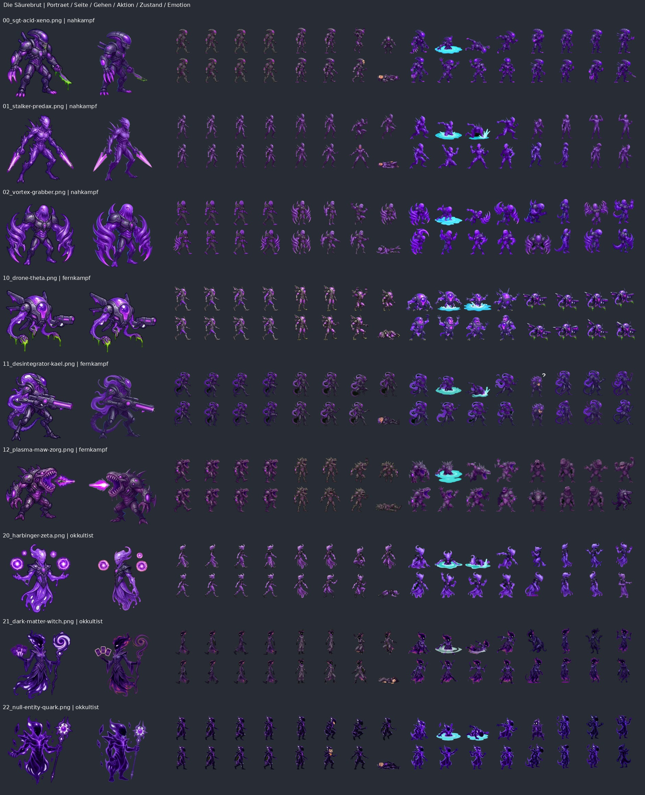
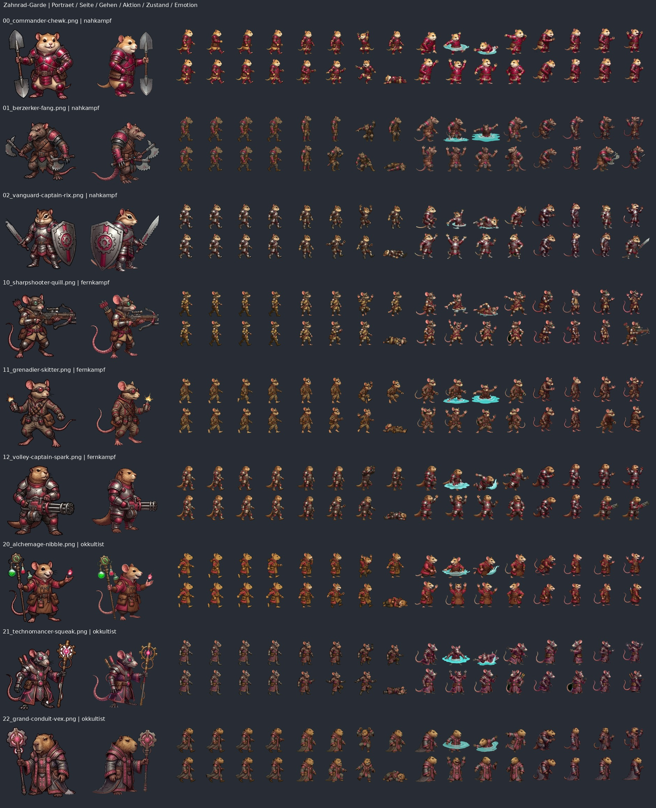
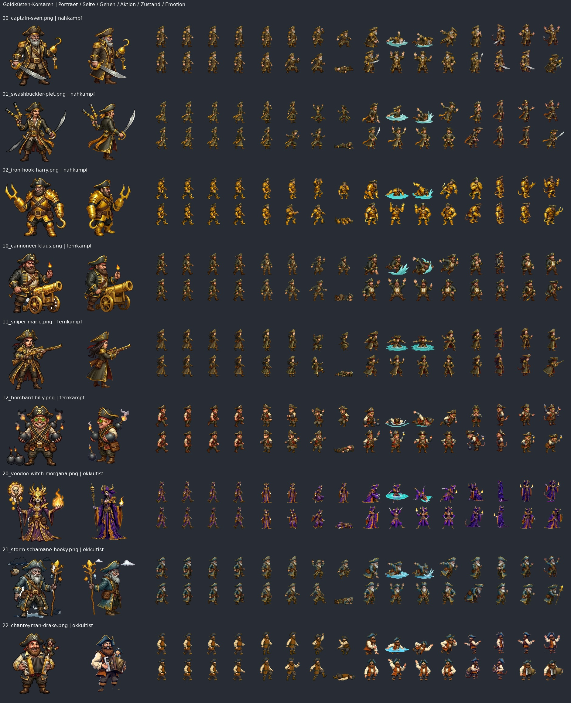
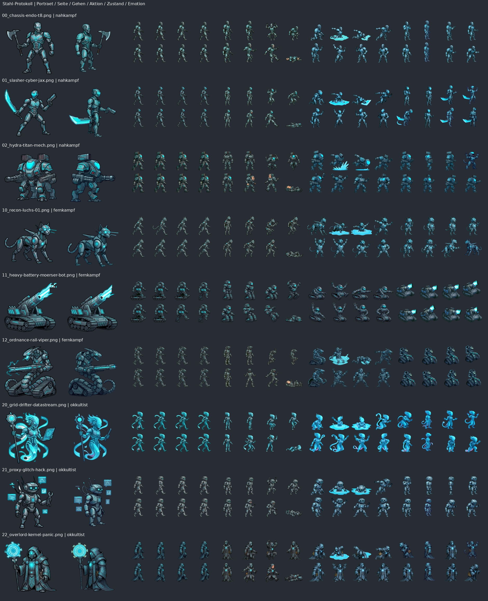
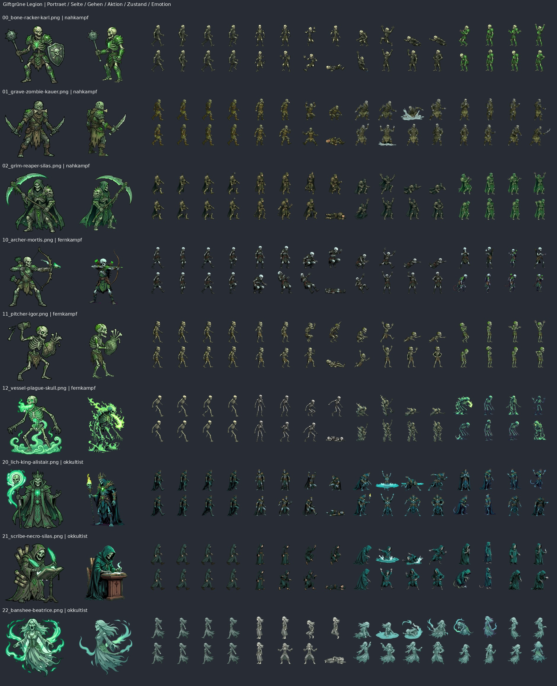
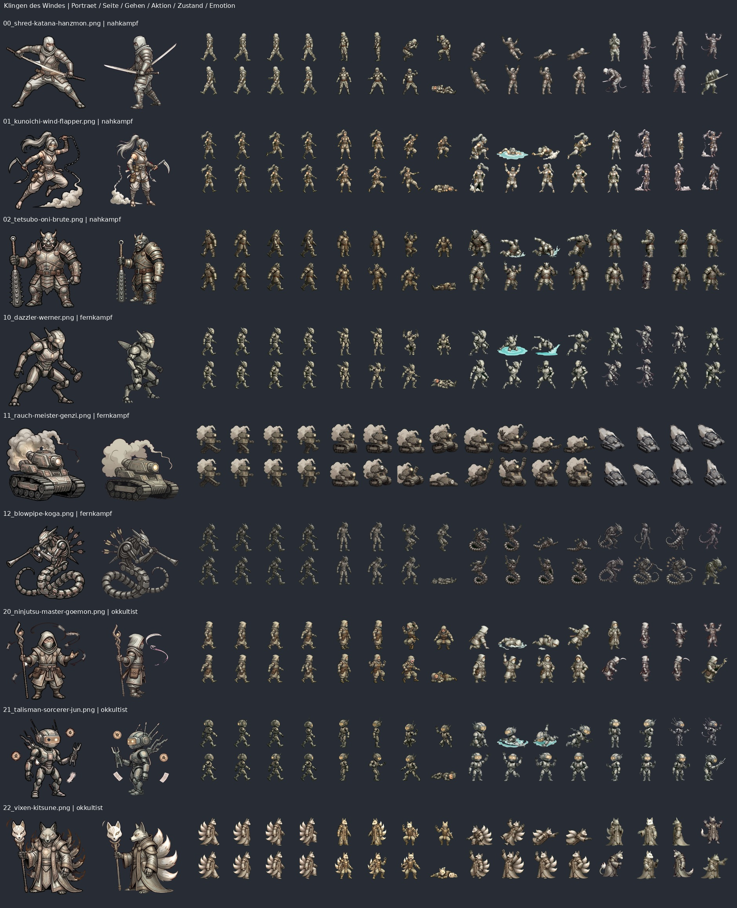
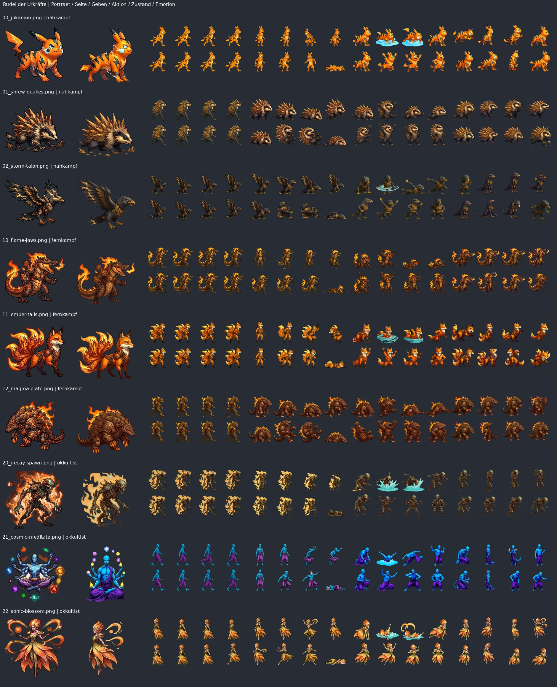
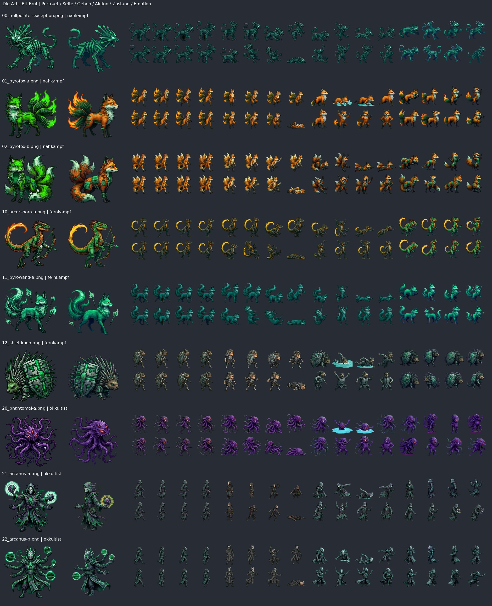
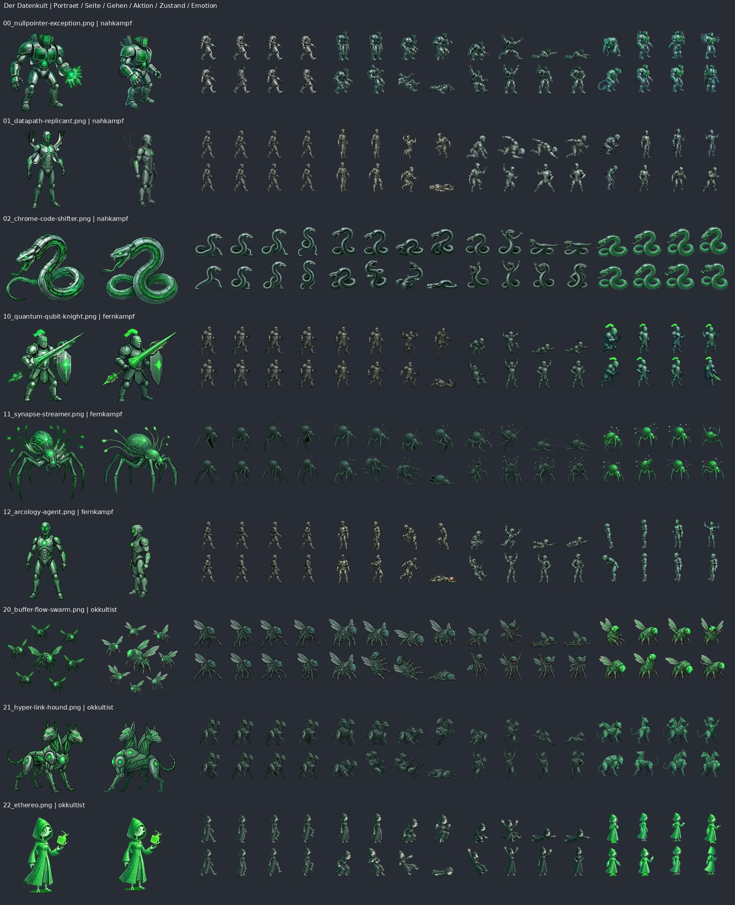

GitHub-Entwurf mit Umsetzung und Bericht: Pull Request #1
Project Armageddon – Fraktionen, 81 Charaktere und Grafikstrategie
Stand: 08.11.2026. Geprüfte Ausgangsbasis: main, Commit 8882aeb35aa064201170a63d9e4c9d6aaca3fbaf (05.11.2026). Repository: https://github.com/kAInplanmusic/ProjectArmageddon
Ergebnis
Die gewünschte Verbindung aus fotorealistischer Landschaft, düsterem zerstörbarem Comicgelände und ausdrucksstarken Fraktionsfiguren passt zur vorhandenen Architektur. Ein Engine-Neubau ist dafür nicht nötig. Der größte Aufwand steckt in verlässlichen Charakteranimationen und besseren Originalbildern. Die vorhandenen Dateien sind zahlenmäßig vollständig, aber nicht durchgängig identitäts- oder stiltreu.
Prüfumfang und Grenzen
Alle 81 Katalogeinträge, neun Original-Fraktionsbögen, neun statische Vergleichsbögen mit je neun Figuren sowie alle 324 Charakter-Sheets wurden in der statischen Gesamtübersicht verglichen: Porträt, Seitenansicht, walk, aktion, zustand, emotion. Auffällige Identitätsfehler wurden zusätzlich am Originalblatt kontrolliert. Die Übersichten erlauben Beurteilungen von Körperbau, Farbe, Requisiten und Stil; keine vollständige Einzelbildabnahme jeder kleinen Kontur und keine Abnahme der Animation im zeitlichen Ablauf. Jede Tabellenzeile unten enthält eine konkrete Beobachtung zur jeweiligen Figur. Dateianzahl und Bildmaße wurden aus den Dateien gemessen. Hymnen wurden auf Dateien, Metadaten und Verdrahtung geprüft; keine qualitative Hörabnahme. Leistungsziele unten sind Vorschläge, keine auf Endgeräten gemessenen Zusagen.
Vorhanden und ergänzt
- Vorher vorhanden: 9 Fraktionen; 81 eindeutige IDs; 81 Namen, Fraktionszuordnungen, Kurzbiografien, Signaturwaffen sowie Stärken/Schwächen; 9 Fraktionsnamen, Mottos und Beschreibungen.
- Klassenfassung 3: Nahkampf, Fernkampf, Okkultist. Je Fraktion drei Figuren je Klasse; global 27 je Klasse. Alte Klassen bleiben für alte Replays bestehen.
- Vorhanden: 81 Porträts 256×256, 81 sogenannte HD-Porträts mit nur 257–349 px Kantenlänge, 81 Seitenansichten 256×256.
- Vorhanden: 243 Haupt-Sheets und 81 Emotions-Sheets, jeweils 1024×512, acht Zellen à 256×256. Insgesamt 2.592 nominelle Zellen; keine Behauptung, dass alle korrekt animiert sind.
- Neu ergänzt: 9 eigenständige SVG-Embleme und 9 SVG-Banner; 9 lokal ausgelieferte Fraktionsschriften; sichtbare Zuordnung in den Kaderreitern und im Fraktionskopf. Kleine geometrische Vektorentwürfe, keine fertig gemalten Premium-Wappen.
- Neu ergänzt: lesbare Klassenbezeichnung ohne doppelte technische Rollen-ID; Hinweis, dass Biografie/Signaturwaffe Geschichte beschreiben und die Klasse die Spielwerte bestimmt.
- Unverändert vorhanden: alle neun Hymnen, ausgelöst durch die Fraktionswahl im Menü. Die Kaderreiter allein lösen bislang keinen Hymnenwechsel aus.
- Nicht umgesetzt: Neuproduktion der Charakter-Sheets, Neuzeichnung der Figurenfarben, neue Namen, neue individuelle Spielmechaniken, 4K-Kulissen und echte HDR-Ausgabe. Das sind die folgenden Produktionsaufgaben.
Eindeutige Änderungsliste
| ID | Priorität | Aufgabe und Abnahmekriterium |
| A01 | Muss | Identitätsfehler zuerst beseitigen: niemals Menschengesichter bei Aliens/Robotern, niemals Zweibeiner statt Vierbeiner, niemals Beine an Kettenfahrzeugen. Referenzsilhouette in jedem freigegebenen Frame erhalten. |
| A02 | Muss | Pro Figur Morphologie festlegen: Zweibeiner, Vierbeiner, Vogel, Schlange, Fahrzeug, Schwebewesen oder Schwarm. Passenden Bewegungstyp verwenden. |
| A03 | Muss | Animationsmanifest um tatsächlich manuell geprüfte Rollen und Identitätsfreigabe erweitern. Farbähnlichkeit allein beweist weder Identität noch Pose. Fehlerhafte Frames bis Ersatz gezielt auf passende Seitenansicht/Prozedur zurückfallen lassen. |
| A04 | Muss | Waffen und Requisiten vereinheitlichen. Referenzbilder enthalten fest gezeichnete Waffen, bewegte Sheets entfernen sie, der Renderer legt Waffen separat auf. Standard: unbewaffneter Körper plus separat verankerte Ausrüstung; angeborene Krallen/Mäuler bleiben Körperteile. |
| A05 | Muss | Zustand-Sheets entweder gezielt verdrahten oder als Quellmaterial kennzeichnen. Aktuell lädt ladeBlatt nur walk und aktion; zustand wird dort nicht verwendet. Nicht blind einschalten: sie enthalten ebenfalls Anatomiefehler und fest eingebrannte Wasserspritzer. |
| A06 | Muss | 22 fehlende Hockrollen kontrollieren. Fahrzeuge brauchen ggf. Absenken/Rohrsenkung statt menschlichem Hocken. Fehlende Rolle bleibt ein sichtbarer Fallback, keine falsche Ersatzpose. |
| A07 | Muss | Doppelnamen und Arbeitsnamen redaktionell bereinigen: Nullpointer Exception existiert zweimal; Pixel enthält Unit A/B. IDs/Dateinamen stabil lassen, Anzeigenamen getrennt ändern. Vorschläge stehen pro Figur. |
| A08 | Muss | Geschichtsattribute von tatsächlicher Mechanik trennen. Individuelles Tarnen, Heranziehen, Schwarmsehen usw. nicht als spielbare Eigenschaft behaupten, solange nur Klassenprofil/Ausrüstung wirken. Hinweis wurde ergänzt; Einzeltexte sollten anschließend redaktionell geschärft werden. |
| A09 | Muss | Fraktionsfarbe und Spieler-Teamfarbe separat behandeln. Zwei Spieler dürfen dieselbe Fraktion führen: Teamring, Name und Marker unterscheiden Eigentümer; Körper/Emblem zeigen Fraktion. |
| A10 | Muss | Vierbein-/Fahrzeug-/Schwebeanimationen an dieselbe unveränderte Kollisionsform und denselben Fußpunkt anbinden. Optik darf keine größere Trefferfläche vortäuschen. |
| A11 | Soll | Neue Embleme/Banner gestalterisch verfeinern und auch in Auswahl, Ladebild und Ergebnisanzeige verwenden. Aktuell nur im Kader angebunden. Kleine Fassung noch bei 24 px erkennen. |
| A12 | Soll | Pixel und Datenkult deutlich trennen; Untote giftgelbgrün, Datenkult signalgrün, Pixel violett mit sekundären Codefarben. Neue Identitätsfarben sind ein Entwurf; Figuren sind noch nicht umgefärbt. |
| A13 | Soll | Namen persönlicher und merkfähiger machen; nicht jede Figur benötigt Rang + englischen Techniktitel. Gute Eigenheiten wie Akkordeon, Sprengbrille, abnehmbarer Arm und Schaufel erhalten. |
| A14 | Soll | Kaderreiter an Hymnensteuerung anbinden; 1–2 s Überblendung, keine neue Wiedergabe bei jedem Klick auf dieselbe Fraktion; Nutzergeste und Stummschaltung respektieren. |
| A15 | Soll | Hymnen hörend abnehmen: Lautheit, Spitzen, sauberer Anfang/Schluss und Loopfähigkeit. Verschiedene Längen sind kein Dateifehler. Sieg-Jingle separat 4–8 s, damit nicht jede Hymne im Match dauernd neu startet. |
| A16 | Soll | Klassen optisch an wiederkehrenden Zeichen und Haltung erkennen: Klinge, Projektilvisier, Ritualzeichen. Keine neue Klasse über Farbe codieren, da Farbe der Fraktion gehört. |
| A17 | Muss für 4K-Ziel | Neue native 3840×2160-Kulissen produzieren. Vorhandene 720p–1,7K-Assets nicht bloß hochskalieren und als native 4K ausgeben. Horizon, Licht und Ausschnitt pro Biom abnehmen. |
| A18 | Muss für 4K-Ziel | Responsive Kulissenwahl 1280/1920/2560/3840, anhand sichtbarer Auflösung, DPR-Obergrenze und Geräteleistung. Nur aktuelle Karte und evtl. nächste Variante vorladen; alte Bild-/Canvas-Caches freigeben. |
| A19 | Soll | Fotorealistisches Licht statt pauschal maximaler Sättigung. Vorhandenen Sättigungsdeckel und unteren Dunkelverlauf pro Biom kalibrieren; Spielfläche vor hellen und dunklen Hintergründen testen. |
| A20 | Soll | Terrain/Items als erwachsenen, scharf konturierten Abenteuercomic ausbauen: klare Bruchkanten, Materialunterschiede, feine Texturen, überzeichnete Requisiten; nicht jedes Objekt fotorealistisch machen. |
| A21 | Später | Echtes HDR als eigener optionaler Ausgabepfad mit SDR-Fallback prototypisieren. Aufnahme-/Bildinhalt, Übertragungsformat, Canvas-/Compositing-Pfad, Betriebssystem und Display gemeinsam testen. 4K oder Display-P3 allein bedeutet kein HDR. |
| A22 | Muss vor Abnahme | Bewegungs- und Spielgrößenansicht je Figur vor Schnee, Lava, Nacht und Grün testen. Außerdem 2 Spieler mit identischer Fraktion, Zoom min/max, 1080p und 4K sowie iPhone/Safari und Desktop prüfen. |
Art Direction: meine Empfehlung
Fotorealistische, filmisch beleuchtete Landschaften + lesbares, dreckiges Comicgelände + hochwertige gezeichnete Figuren. Gemeinsam bleiben Licht von links oben, Schattenrichtung, Konturstärke, Kontakt zum Boden und Bildschärfe. Fraktionen dürfen unterschiedliche Materialien, Proportionen und Zeichenstile haben. Realistische Menschen zwischen pixeligen und gemalten Wesen würde ich erst nach einem gemeinsamen Spielszenen-Test zulassen: Der technische Renderer kann das, aber ein überzeugendes Gesamtbild entsteht dadurch nicht automatisch.
Besonders sinnvoll: Shinobi mit Tuscheeinfluss, Pixel tatsächlich kantig, Machina metallisch, Untote mit zerfetzten Gothic-Formen. Keine komplett anderen Maßstäbe, Kamerawinkel oder Bodenschatten pro Team. Kleine Figuren brauchen eine starke Silhouette; fotorealistische Mikroporen bringen bei 40–80 sichtbaren Pixeln wenig. Porträts 768–1024 px und Spielzellen 256–512 px sind ein sinnvoller Produktionsentwurf, kein Zwang zu riesigen 4K-Sprites.
Die neuen Schriftarten dienen Fraktionsnamen/Bannern. Biografien, Werte und kleine HUD-Texte bleiben in einer gemeinsamen gut lesbaren Schrift. Die Fontsource-Pakete liefern lokale Dateien und OFL-Lizenzdateien; keine externe Font-Abfrage ist nötig.
Architektur, Leistung und Umfang
Canvas-2D-Client, getrennte Kulisse, Terrain und Figuren; deterministische ECS-Simulation mit festem Schritt und autoritativem Server. Eine visuelle Überarbeitung kann auf dem Client bleiben. Relevant: kulisseUndWasser.js, kulissenUrls.js, renderer.js, figurenBilder.js, figurSheets.js, figurStufen.js und kaderansicht.js. Bestehendes Lazy-Laden, vorskalierte Figurenstufen und Kulissencaches sind gute Ansatzpunkte.
In backdrops und backdrops-neu liegen 272 WebP-Dateien mit zusammen 25.511.774 Byte (~24,3 MiB). Kein Bild erreicht 3840×2160. Die älteren 224 Bilder umfassen 80 mit 1280×720, weitere meist bis 1440 px; die neuen 48 haben 1536×672 oder 768×1344. Die repräsentative Sichtung zeigt einen Mix aus Fotos, gemalten Fantasieszenen und stilisierten Bildern. Eine einheitlich fotorealistische Qualität braucht Bildproduktion, nicht nur andere Export-Einstellungen. Andere Sonderkulissen, etwa Planeten, sind in dieser Zahl nicht enthalten.
Ein 3840×2160-Bild als RGBA8 benötigt rechnerisch 31,6 MiB entpackt. Dieselbe Fläche mit vier 16-Bit-Kanälen 63,3 MiB. Das sind Rohdaten, nicht der tatsächliche Browser-Gesamtspeicher. Mehrere Kulissen-, Terrain-, Wasser- und Effektflächen vervielfachen den Bedarf; deshalb Quellenauflösung, Bildschirmausgabe und Simulationsraster getrennt behandeln. Ein 4K-Hintergrund verlangt kein 4K-Physikraster.
272 Bilder auf 4K auszutauschen wäre ein großes Kunstprojekt. Besser: zuerst sechs sehr gute Referenzkulissen (Schnee, Wald, Wüste, Lava, Stadt, Nacht), danach alle aktiven Biome; bestehende Variantenzahl nur behalten, wo sie einen sichtbaren Gewinn bringt. Als Budgetentwurf: 0,5–2 MB je komprimierter 4K-Kulisse, durch echte Qualitätsmessung festzulegen. Bei 272 Bildern entspräche das theoretisch 136–544 MB Gesamtdateien, die niemals alle beim Start geladen werden sollen.
Die 324 Charakter-Sheets belegen komprimiert ~24,9 MiB. Bei acht 256er-Zellen sind das 2.592 mögliche Frames. Bereits vier 1024×512-Blätter ergeben 8 MiB RGBA8 je Figur vor Mip-/Canvas-Kopien. Der Client lädt davon derzeit nur walk, aktion und Emotion, und nur für verwendete Figuren. Alle 81 mit allen Ebenen gleichzeitig warm zu halten wäre unnötig. Kein pauschales Verdoppeln sämtlicher Zellen; zuerst die Morphologiefehler beheben.
Der Code nutzt normale getContext('2d')-Aufrufe ohne durchgehende HDR-Konfiguration. SDR mit filmischem Tonwertumfang ist kurzfristig passend. Echtes HDR darf nicht allein aus einer Bilddateiendung oder einer Media Query abgeleitet werden. Die WHATWG-Canvas-Spezifikation beschreibt Farbraum und Kanaltyp; die W3C-HDR-Arbeit behandelt zusätzliche Ausgabefragen. Die Abfrage dynamic-range erkennt Fähigkeiten, nicht automatisch eine aktive korrekte HDR-Wiedergabe.
Quellen: https://html.spec.whatwg.org/dev/canvas.html ; https://www.w3.org/TR/css-color-hdr-1/ ; https://developer.mozilla.org/en-US/docs/Web/CSS/Reference/At-rules/@media/dynamic-range
Aufwand als Planungsschätzung
- Fraktionsdaten, Banner, Schriftzuordnung und Menüintegration: klein bis mittel; erster Kaderstand hier umgesetzt.
- Sprite-Verkabelung, Morphologieprofile, Ersatzregeln und Vorschauwerkzeug: mittel, etwa 3–7 Entwicklungstage mit klarer Vorlage.
- Kunstkorrektur aller 81 Figuren: groß. Als grobe Kalkulation 1–3 Stunden pro Figur nur für Korrekturrunden/Qualitätskontrolle = 81–243 Arbeitsstunden; komplette Neuzeichnung kann deutlich länger dauern. Keine Lieferzusage und keine gemessene Produktionsgeschwindigkeit.
- Sechs Referenzkulissen + adaptive Auslieferung und Gerätemessung: mittel; etwa 3–6 Tage einschließlich erster Gestaltungsschleife als grober Ansatz.
- Vollständiger Austausch aller Kulissenvarianten: groß, separat nach der Referenzabnahme kalkulieren.
- Echtes HDR: gesonderter ergebnisoffener Prototyp, nicht Voraussetzung für den gewünschten Look.
Klassen und Texte
Die drei Klassen sind vollständig zugewiesen. Aus den Tabellen: Nahkampf Leben 1,30 / Schaden 0,75 / Beweglichkeit 1,20; Fernkampf jeweils 1,00; Okkultist Leben 0,70 / Schaden 1,25 / Beweglichkeit 0,80. Die Summe einiger Faktoren ist keine ausreichende Aussage über praktische Matchbalance.
Viele Charaktertexte stammen stilistisch aus einem System mit individuellen Rollen und Fähigkeiten. Beispiel: Predax beschreibt Tarnen, während die Figurenauswahl als Darstellung auf dem Klassenprofil liegt. Diese Texte wurden hier nicht ungefragt durch neue Fähigkeiten in der Simulation umgesetzt. Für eine persönliche Note empfehle ich: Biografie = Herkunft + Macke + Motivation, dazu eine eigene kurze Reaktion, Siegesgeste und Signatur-Requisite. Neue spielwirksame Spezialfähigkeiten erst als eigenes Balancevorhaben.
Fehlende Hockrollen
- beasts/10_flame-jaws
- beasts/22_sonic-blossom
- datacult/20_buffer-flow-swarm
- machina/11_heavy-battery-moerser-bot
- machina/20_grid-drifter-datastream
- machina/22_overlord-kernel-panic
- pirates/20_voodoo-witch-morgana
- pixel/02_pyrofox-b
- pixel/12_shieldmon
- pixel/20_phantomal-a
- pixel/22_arcanus-b
- rodentia/00_commander-chewk
- rodentia/02_vanguard-captain-rix
- rodentia/10_sharpshooter-quill
- rodentia/12_volley-captain-spark
- rodentia/20_alchemage-nibble
- rodentia/22_grand-conduit-vex
- shinobi/11_rauch-meister-genzi
- undead/11_pitcher-igor
- xeno/01_stalker-predax
- xeno/11_desintegrator-kael
- xeno/20_harbinger-zeta
Produktionsfolge und Abnahme
1. Sechs Figuren als Referenz: ein Humanoid, ein Vierbeiner, ein Fahrzeug, ein Schweber, eine Schlange, ein Schwarm. In einer echten Spielsituation mit Fotokulisse und Comicterrain prüfen.
2. Einheitliches Manifest mit Bewegungstyp, Pose, Hand-/Fuß-/Mündungsanker und geprüfter Framefreigabe definieren. Animationsfehler nach Schwere isolieren und reparieren.
3. Alle 81 anhand der folgenden Einzelblätter abarbeiten, nicht allein nach Dateiexistenz freigeben. Namen/Details dabei bestätigen.
4. Fraktionsidentität auf weitere Menüs, Ergebnisanzeige und Hymnen ausweiten. Erst danach Körperfarben gezielt angleichen.
5. Sechs 4K-Kulissen produzieren, adaptive Auslieferung und Speicherbudget auf Endgeräten messen. Dann übrige Biome.
6. Optional HDR-Prototyp mit identischem SDR-Vergleich; für jedes Zielgerät erfolgreiche Wiedergabe und korrekte Farbe nachweisen.
Verifikation dieses Arbeitsstands
- npm test: 2.416 bestanden, 0 fehlgeschlagen, 0 übersprungen.
- npm run check:docs: bestanden.
- npm run build: bestanden; bestehende Größenwarnung für das Haupt-JavaScript-Bundle bleibt.
- ESLint der beiden geänderten/neuen JavaScript-Module: bestanden.
- Fallow: keine neuen ungenutzten Exporte/Dateien/Dependencies und keine Duplikatgruppen im Änderungsumfang; Warnungen für Komplexität der Kaderansicht und Gestaltungstokens bleiben. Keine große Architekturänderung vorgenommen.
- Browser-E2E: nicht abgenommen. Das erwartete Playwright-Chromium fehlt, Download lieferte keine gültige ZIP; vorhandenes Chromium scheitert am gesperrten lokalen Socket. Auch alternativer Start ohne mehrere Prozesse scheitert. Keine dieser Umgebungsfehler ist ein bestandener UI-Test. Darum kein automatischer Merge nach main.
- Keine Zusage einer abgeschlossenen Bewegungs-, Hör-, Safari-, 4K- oder HDR-Abnahme.
Fraktionen und Einzelprüfung aller 81 Figuren
Die vorhandenen Kurzbiografien sind unten unverändert dokumentiert. Namensideen sind Vorschläge, keine bereits geänderten Katalogwerte. Jede Figur besitzt alle vier Sheetarten; die Einzelnotiz beschreibt deren optische Schwächen. Die Fraktionsbeschreibung ist bereits im Spiel vorhanden und wird hier nicht als neu erfunden ausgegeben.
Die Säurebrut
![Bannerentwurf]()
Ein Schwarm aus einer Welt, deren Atmosphäre ätzend ist. Die Säurebrut kennt keine Heimat im üblichen Sinn: Sie nistet in dem, was sie zerlegt hat. Ihre Körper sind an ihre eigene Umgebung angepasst, was sie für gewöhnliche Waffen schwer greifbar macht.
Motto: Was wir berühren, löst sich auf.
Zielentwurf: Violett / Säuregrün · Biopunk-Comic mit glänzendem Chitin · Schrift: Rajdhani
Vorhandene Hymne: 72.22 s, MP3, 48 kHz, Stereo. Stilidee für spätere Hörabnahme: Dunkler Industrial mit fremdartigem Chor.
Vergleichsbogen: alle neun Figuren und alle Sheetarten

Reihenfolge je Zeile: Porträt / Seite / Gehen / Aktion / Zustand / Emotion. Für genaue Konturen hineinzoomen. Die Originalblätter bleiben im Repository.
Sgt. Acid-Xeno
Team: Die Säurebrut · Klasse: Nahkampf · ID: sgt-acid-xeno
Kurzbiografie: Der einzige Unteroffizier der Brut, der eine Dienstvorschrift mitgebracht hat. Er führt sie wörtlich, was in einer Spezies ohne Hierarchie erstaunlich gut funktioniert.
Gepanzerter violetter Alien mit Säurespitzen. Im Aktionsblatt werden Zelle 6 und 7 zu einem menschlichen Mann im Alienanzug. Beide zwingend ersetzen; Panzerkopf und säuregrüne Details erhalten.
Signaturwaffe der Geschichte: Säureklinge – Die Klinge sondert ein Sekret ab, das Rüstung durchlässt und danach weiterfrisst.
Vorhandene Stärken, Schwächen und Dateipfad
Stärken: Rüstung schützt ihn kaum weniger als seine eigene Haut; Hält Treffer aus, die seine Truppe zerlegen würden
Schwächen: Langsam — er verlässt sich darauf, dass der Gegner auf ihn zukommt; Seine Säure greift auch eigene Ausrüstung an
src/client/assets/{characters,characters-side,sprite-sheets,sprite-sheets-emotion}/xeno/00_sgt-acid-xeno.png
Stalker Predax
Team: Die Säurebrut · Klasse: Nahkampf · ID: stalker-predax
Kurzbiografie: Predax jagt nicht, um zu töten, sondern um zu sehen, wie der Gegner sich verhält. Wer ihn überlebt, wird beim zweiten Mal anders angegangen.
Schlanker Stachel-Jäger mit Doppelklingen. Treffer-/Todesposen verlieren den Alienkopf; Aktionsblatt korrigieren. Schlanke Silhouette von Sgt. Acid-Xeno stärker absetzen.
Signaturwaffe der Geschichte: Zwillingsklingen – Zwei kurze Energieklingen, die im Takt summen und dadurch schwer zu orten sind.
Vorhandene Stärken, Schwächen und Dateipfad
Stärken: Sehr schnell, auch über unebenes Gelände; Kann sich kurz unsichtbar machen
Schwächen: Wenig Leben — ein Volltreffer genügt; Nach dem Tarnen ist die Energie eine Weile aufgebraucht
src/client/assets/{characters,characters-side,sprite-sheets,sprite-sheets-emotion}/xeno/01_stalker-predax.png
Vortex Grabber
Team: Die Säurebrut · Klasse: Nahkampf · ID: vortex-grabber
Kurzbiografie: Die Brut setzt ihn dort ein, wo Deckung das Problem ist. Er holt Gegner aus Stellungen, die sonst unerreichbar wären.
Massiger Tentakelkämpfer. Gehblatt verschlankt ihn zu einem generischen Zweibeiner; Masse, verhülltes Gesicht und beide Greifarme in jedem Frame erhalten.
Signaturwaffe der Geschichte: Wirbelarme – Zwei Tentakel, die einen Gegner heranziehen statt ihn wegzustoßen.
Vorhandene Stärken, Schwächen und Dateipfad
Stärken: Zieht Ziele aus der Deckung; Hohe Reichweite für einen Nahkämpfer
Schwächen: Kann nur ein Ziel gleichzeitig halten; Sehr unbeweglich, während er zieht
src/client/assets/{characters,characters-side,sprite-sheets,sprite-sheets-emotion}/xeno/02_vortex-grabber.png
Drone Theta
Team: Die Säurebrut · Klasse: Fernkampf · ID: drone-theta
Kurzbiografie: Theta ist weniger eine Einheit als ein Sinnesorgan: Was sie sieht, sieht der Schwarm. Ihre Angriffe sind entsprechend präzise und entsprechend gleichförmig.
Schwebende Tentakeldrohne mit Pistole. Geh-/Aktionsblatt erzeugt Beine und humanoiden Rumpf. Schwebezyklus statt Gehzyklus erforderlich; Tentakel und Sensorauge verankern.
Signaturwaffe der Geschichte: Auge des Schwarms – Ein Projektil, das über dem Feld schwebt und den Einschlag von oben herab führt.
Vorhandene Stärken, Schwächen und Dateipfad
Stärken: Trifft auch über Deckungen hinweg; Gleichmäßiger, gut vorhersehbarer Schaden
Schwächen: Vollständig darauf angewiesen, zu sehen; Wenig Leben für eine Fernkampfeinheit
src/client/assets/{characters,characters-side,sprite-sheets,sprite-sheets-emotion}/xeno/10_drone-theta.png
Desintegrator Kael
Team: Die Säurebrut · Klasse: Fernkampf · ID: desintegrator-kael
Kurzbiografie: Kael bevorzugt Waffen, die keine Explosion hinterlassen: Die Brut braucht den Boden hinterher noch. Er rechnet damit, dass der Gegner nachgibt, bevor das Gelände es tut.
Geschwungener biomechanischer Schütze. Aktionsblatt verliert den Kopf bei Treffer/Tod und macht daraus einen Menschen. Waffenrohr, Kopfbogen und Tentakel als Identitätsmerkmale festschreiben.
Signaturwaffe der Geschichte: Auflöser – Ein Strahl, der Materie nicht sprengt, sondern schrittweise abträgt.
Vorhandene Stärken, Schwächen und Dateipfad
Stärken: Zerstört Deckung zuverlässig und dosiert; Trifft sofort, ohne Flugzeit
Schwächen: Wenige Schuss im Magazin; Gegen bewegliche Ziele unzuverlässig
src/client/assets/{characters,characters-side,sprite-sheets,sprite-sheets-emotion}/xeno/11_desintegrator-kael.png
Plasma-Maw Zorg
Team: Die Säurebrut · Klasse: Fernkampf · ID: plasma-maw-zorg
Kurzbiografie: Zorg ist das, was die Brut einsetzt, wenn Verhandlungen nicht vorgesehen waren. Er zielt nicht, er öffnet das Maul.
Breiter Schlundträger mit Plasmaspeichel. Seitenbild blickt gegenüber vielen anderen Referenzen anders, Aktionsblatt verändert Körperbau und Farbton. Blickrichtung, Kieferbreite und Giftleuchten normalisieren.
Signaturwaffe der Geschichte: Plasmamaule – Ein gebündelter Plasmastrahl von kurzer Dauer und großer Wirkung.
Vorhandene Stärken, Schwächen und Dateipfad
Stärken: Sehr hoher Schaden auf kurze bis mittlere Entfernung; Verschiebt Figuren deutlich
Schwächen: Sehr kurze Reichweite für einen Fernkämpfer; Nach dem Schuss lange wehrlos
src/client/assets/{characters,characters-side,sprite-sheets,sprite-sheets-emotion}/xeno/12_plasma-maw-zorg.png
Harbinger Zeta
Team: Die Säurebrut · Klasse: Okkultist · ID: harbinger-zeta
Kurzbiografie: Zeta spricht nicht und gibt keine Befehle. Die Brut folgt ihr trotzdem, weil sie als Einzige zu wissen scheint, wo die Reise endet.
Schwebendes Orakel mit Orbitalkugeln. Geh-/Aktionsblatt gibt ihm Beine und einen menschlichen Todeskörper. Schweben und Kugeln auch bei Treffer/Untergang erhalten.
Signaturwaffe der Geschichte: Drei Kreise – Drei schwebende Kugeln, die nacheinander ihr Ziel suchen.
Vorhandene Stärken, Schwächen und Dateipfad
Stärken: Mehrfache Treffer aus einer Handlung; Verteilt Schaden über mehrere Ziele
Schwächen: Jede Kugel einzeln schwach; Bestraft Fehlschüsse überproportional
src/client/assets/{characters,characters-side,sprite-sheets,sprite-sheets-emotion}/xeno/20_harbinger-zeta.png
Dark-Matter Witch
Team: Die Säurebrut · Klasse: Okkultist · ID: dark-matter-witch
Kurzbiografie: Sie hat nie erklärt, woher die Karten stammen. Wer sie fragt, bekommt eine neue Karte und keine Antwort.
Dunkle Hexensilhouette mit Karten und Spiralstab. In Aktionsposen erscheint ein menschlicher Kopf, Zubehör verschwindet. Dunkle Silhouette auf dunklen Biomen mit schmalem violettem Randlicht sichern.
Signaturwaffe der Geschichte: Karten des Nichts – Schwebende Karten, von denen nur eine trifft — und welches, steht nicht fest.
Vorhandene Stärken, Schwächen und Dateipfad
Stärken: Umlenkbar: Ihre Wirkung wechselt je nach Feldlage; Schwer vorherzusagen
Schwächen: Unzuverlässig — der Ausgang ist nicht planbar; Wenig Leben
src/client/assets/{characters,characters-side,sprite-sheets,sprite-sheets-emotion}/xeno/21_dark-matter-witch.png
Null-Entity Quark
Team: Die Säurebrut · Klasse: Okkultist · ID: null-entity-quark
Kurzbiografie: Quark ist nicht ganz da. Seine Umrisse flackern, und wo er steht, misst das Gelände gelegentlich falsch.
Gezackte Leerenentität mit schwebenden Fragmenten. Treffer/Tod im Aktionsblatt zeigt menschliche Anatomie. Zerfall in eigene Fragmente statt menschlichem Leichnam; Kontur von Dark-Matter Witch unterscheiden.
Signaturwaffe der Geschichte: Leerstellenkristall – Ein Kristall, der einen Bereich des Feldes für kurze Zeit aus der Welt entfernt.
Vorhandene Stärken, Schwächen und Dateipfad
Stärken: Kann Gelände zeitweise ausblenden; Ignoriert Deckung vollständig
Schwächen: Zerbrechlich — ein Treffer genügt meist; Wirkung endet unabhängig vom Willen des Trägers
src/client/assets/{characters,characters-side,sprite-sheets,sprite-sheets-emotion}/xeno/22_null-entity-quark.png
Zahnrad-Garde
![Bannerentwurf]()
Ein Volk von Nagern, das den Sprung von der Höhle zur Dampfmaschine in einer Generation geschafft hat. Die Zahnrad-Garde kämpft mit Werkzeug, das für den Bergbau gebaut wurde — und deshalb mehr aushält als jede Waffe, die nur für den Krieg gedacht war.
Motto: Klein, zahlreich, unaufhaltsam.
Zielentwurf: Karminrot / Stahl · Detaillierter dreckiger Abenteuercomic · Schrift: Cinzel
Vorhandene Hymne: 76.97 s, MP3, 48 kHz, Stereo. Stilidee für spätere Hörabnahme: Stampfender Werkstatt-Folk mit Blech und Trommeln.
Vergleichsbogen: alle neun Figuren und alle Sheetarten

Reihenfolge je Zeile: Porträt / Seite / Gehen / Aktion / Zustand / Emotion. Für genaue Konturen hineinzoomen. Die Originalblätter bleiben im Repository.
Commander Chewk
Team: Zahnrad-Garde · Klasse: Nahkampf · ID: commander-chewk
Kurzbiografie: Chewk hat den Bergbau organisiert und führt ihn weiter — nur die Richtung hat gewechselt. Er befiehlt in Schichten und rechnet in Ladungen.
Gepanzerter Hamster mit Doppelschaufel. Gute kompakte Hauptsilhouette; Animationen verlieren Signaturwerkzeug und verändern Kopfproportionen. Hamsterbacken, rote Brustplatten und Schaufelfassung konstant halten.
Signaturwaffe der Geschichte: Schaufel der Garde – Ein Grabewerkzeug, das im Nahkampf erstaunlich gut mithält.
Vorhandene Stärken, Schwächen und Dateipfad
Stärken: Sehr robust, führt die Reihe persönlich an; Kann sich durch Gelände graben
Schwächen: Langsam, auch in der Entscheidung; Keine Fernkampfmöglichkeit
src/client/assets/{characters,characters-side,sprite-sheets,sprite-sheets-emotion}/rodentia/00_commander-chewk.png
Berzerker Fang
Team: Zahnrad-Garde · Klasse: Nahkampf · ID: berzerker-fang
Kurzbiografie: Fang hält nichts von Schichten und nichts von Plänen. Die Garde lässt ihn laufen, weil er in der ersten Reihe mehr bewirkt als jede Ordnung.
Dunkle Berserkerratte mit zwei Äxten. Hauptentwurf deutlich; Äxte fehlen in Bewegungs-/Aktionsblättern. Eigene breite Angriffshaltung und peitschenden Schwanz ergänzen.
Signaturwaffe der Geschichte: Rattenklinge – Eine gezackte Axt, die bei jedem Treffer weiterreißt.
Vorhandene Stärken, Schwächen und Dateipfad
Stärken: Höchster Nahkampfschaden der Garde; Schneller Vorstoß
Schwächen: Keine Verteidigung — er nimmt jeden Gegenschlag; Verlässt Deckung freiwillig
src/client/assets/{characters,characters-side,sprite-sheets,sprite-sheets-emotion}/rodentia/01_berzerker-fang.png
Vanguard Captain Rix
Team: Zahnrad-Garde · Klasse: Nahkampf · ID: vanguard-captain-rix
Kurzbiografie: Rix steht dort, wo der Durchbruch droht, und hält ihn. Sein Schild hat eine Zahnradprägung, die zugleich Rangabzeichen und Werkzeugverweis ist.
Gestreiftes Nagetier mit großem Zahnrad-Schild. Schild fehlt im Gehblatt; silberne Rüstung verliert roten Teamakzent. Schild als persistente Silhouette oder als klar getrenntes Ausrüstungsasset führen.
Signaturwaffe der Geschichte: Zahnschild – Ein Turmschild mit eingebautem Getriebe, das Treffer umlenkt.
Vorhandene Stärken, Schwächen und Dateipfad
Stärken: Deckt Verbündete in der Nähe; Hält Flächenschaden stand
Schwächen: Schwacher eigener Angriff; Braucht Verbündete, um zu wirken
src/client/assets/{characters,characters-side,sprite-sheets,sprite-sheets-emotion}/rodentia/02_vanguard-captain-rix.png
Sharpshooter Quill
Team: Zahnrad-Garde · Klasse: Fernkampf · ID: sharpshooter-quill
Kurzbiografie: Quill baute seine Armbrust selbst und kennt jede Schraube daran. Er zielt langsam, aber er zielt einmal.
Maus mit Zielbrille und Armbrust. Brille bleibt erkennbar, Armbrust verschwindet in Bewegungsbildern und Rot wird braun. Einheitliches Rot und definierter Waffenanker erforderlich.
Signaturwaffe der Geschichte: Schwere Armbrust – Ein Bolzen mit mehrstufigem Antrieb und sehr flacher Flugbahn.
Vorhandene Stärken, Schwächen und Dateipfad
Stärken: Sehr hohe Genauigkeit auf große Entfernung; Soforttreffer ohne Flugzeitkorrektur
Schwächen: Lange Nachladezeit; Bewegt sich praktisch nicht
src/client/assets/{characters,characters-side,sprite-sheets,sprite-sheets-emotion}/rodentia/10_sharpshooter-quill.png
Grenadier Skitter
Team: Zahnrad-Garde · Klasse: Fernkampf · ID: grenadier-skitter
Kurzbiografie: Skitter zählt beim Werfen laut mit. Die Garde hält das für Angeberei; es hat aber den Vorteil, dass niemand im Weg steht.
Schmale Maus mit Schutzbrille und Sprengmittel. Entwurf passt; im kleinen Maßstab Quill sehr ähnlich. Größeren Sprengbeutel und runde Bombensilhouette als Unterschied vorsehen.
Signaturwaffe der Geschichte: Zündbombe – Eine Bombe mit sichtbarem Zünder, die man zählen hört.
Vorhandene Stärken, Schwächen und Dateipfad
Stärken: Flächenschaden mit Vorwarnung; Vertreibt Gegner aus Stellungen
Schwächen: Zünder verrät die Absicht; Gefährdet eigene Truppen
src/client/assets/{characters,characters-side,sprite-sheets,sprite-sheets-emotion}/rodentia/11_grenadier-skitter.png
Volley Captain Spark
Team: Zahnrad-Garde · Klasse: Fernkampf · ID: volley-captain-spark
Kurzbiografie: Spark hat die Salve aus dem Bergbau übernommen: Dort sprengt man nicht alles auf einmal, sondern in der richtigen Reihenfolge.
Kräftiger Nager mit Gatling. Die schwere Waffe verschwindet in den Lauf-/Aktionsbildern. Körpermasse behalten und Gatling separat animieren; nicht wie einen unbewaffneten Nahkämpfer lesen lassen.
Signaturwaffe der Geschichte: Salvenkanone – Ein mehrläufiges Rohr, das viele Schüsse kurz hintereinander abgibt.
Vorhandene Stärken, Schwächen und Dateipfad
Stärken: Hoher Schaden über mehrere Schüsse; Deckt einen Bereich ab
Schwächen: Braucht offene Sichtlinie; Munition schnell verbraucht
src/client/assets/{characters,characters-side,sprite-sheets,sprite-sheets-emotion}/rodentia/12_volley-captain-spark.png
Alchemage Nibble
Team: Zahnrad-Garde · Klasse: Okkultist · ID: alchemage-nibble
Kurzbiografie: Nibble hat nie gelernt, zwischen Chemie und Zauberei zu unterscheiden, und sieht keinen Grund dafür. Was wirkt, wandert in den nächsten Versuch.
Heller Alchemisten-Nager mit Flaschen und Stab. Aktion/Bewegung entfernen Flaschen und Stab. Trankgürtel sichtbar halten; Magie über grüne Flüssigkeit bei weiterhin roten Fraktionsakzenten zeigen.
Signaturwaffe der Geschichte: Fläschchenregal – Ein Stab mit aufgesetzten Flaschen, deren Inhalt sich beim Wurf entscheidet.
Vorhandene Stärken, Schwächen und Dateipfad
Stärken: Vielseitig: Feuer, Säure und Frost stehen bereit; Heilt Verbündete nebenbei
Schwächen: Unzuverlässige Mischungen; Kurze Reichweite
src/client/assets/{characters,characters-side,sprite-sheets,sprite-sheets-emotion}/rodentia/20_alchemage-nibble.png
Technomancer Squeak
Team: Zahnrad-Garde · Klasse: Okkultist · ID: technomancer-squeak
Kurzbiografie: Squeak betreibt Dampftechnik mit Kristallen und nennt das Ergebnis Magie. Die Garde nennt es Fortschritt.
Dunkler Technomant mit Rundbrille und Energierucksack. Stärkere Wiedererkennbarkeit als viele andere; Stab und Rucksack in den Zuständen sichern, keine Änderung der Schnauzenform.
Signaturwaffe der Geschichte: Kristallstab – Ein Stab, dessen Kopf die Bewegungsenergie des Feldes aufnimmt und zurückgibt.
Vorhandene Stärken, Schwächen und Dateipfad
Stärken: Verstärkt eigene Verbündete; Hoher Schaden gegen Maschinen
Schwächen: Wenig Leben; Wirkt schlecht gegen belebte Ziele
src/client/assets/{characters,characters-side,sprite-sheets,sprite-sheets-emotion}/rodentia/21_technomancer-squeak.png
Grand Conduit Vex
Team: Zahnrad-Garde · Klasse: Okkultist · ID: grand-conduit-vex
Kurzbiografie: Vex leitet die Energie der Garde. Er hat die Garde davon überzeugt, dass Fortschritt eine Frage der Verteilung ist.
Großer brauner Nager in ornamentierter roter Robe. Gute Trennung von den Mäusen; Laufbilder vereinfachen Robe und lassen Stab verschwinden. Breite Robensilhouette und Brustsymbol erhalten.
Signaturwaffe der Geschichte: Zahnradkern – Ein großer Kristallkern auf einem Zahnkranz, der Kräfte bündelt.
Vorhandene Stärken, Schwächen und Dateipfad
Stärken: Sehr hoher Flächenschaden; Stärkt die ganze Reihe
Schwächen: Sehr langsam; Ein Ausfall trifft die gesamte Aufstellung
src/client/assets/{characters,characters-side,sprite-sheets,sprite-sheets-emotion}/rodentia/22_grand-conduit-vex.png
Goldküsten-Korsaren
![Bannerentwurf]()
Keine Nation, sondern ein Abkommen: Wer an der Goldküste anlegt, teilt seinen Fund. Die Korsaren fahren schwarze Segel und vergoldete Kanonen — Prahlerei, die sich bezahlt macht, weil Abschreckung billiger ist als ein Gefecht.
Motto: Wer den Hafen hält, hält die See.
Zielentwurf: Gold / Schwarz · Überzeichneter erwachsener Piratencomic · Schrift: Pirata One
Vorhandene Hymne: 30.12 s, MP3, 48 kHz, Stereo. Stilidee für spätere Hörabnahme: Düsterer Shanty-Rock mit Akkordeon.
Vergleichsbogen: alle neun Figuren und alle Sheetarten

Reihenfolge je Zeile: Porträt / Seite / Gehen / Aktion / Zustand / Emotion. Für genaue Konturen hineinzoomen. Die Originalblätter bleiben im Repository.
Captain Sven
Team: Goldküsten-Korsaren · Klasse: Nahkampf · ID: captain-sven
Kurzbiografie: Sven hält das Abkommen der Goldküste zusammen. Er hat noch nie eine Tonne Gold aus einem Hafen geholt, aber er hat noch nie einen Hafen verlassen, ohne dass jemand ihm folgte.
Graubärtiger Kapitän mit Haken, Schlüssel und Säbel. Hauptansichten stimmig; Haken und Schlüssel verschwinden in Aktionen. Zubehör getrennt verankern und Bart/Hut über alle Posen sichern.
Signaturwaffe der Geschichte: Schlüssel und Säbel – Sein Säbel kämpft, sein Schlüssel öffnet — auch Kisten, die noch niemand gesehen hat.
Vorhandene Stärken, Schwächen und Dateipfad
Stärken: Sehr erfahren, robust und diszipliniert; Verbündete kämpfen in seiner Nähe besser
Schwächen: Keine Fernkampfmöglichkeit; Weigert sich, Vorräte zurückzulassen
src/client/assets/{characters,characters-side,sprite-sheets,sprite-sheets-emotion}/pirates/00_captain-sven.png
Swashbuckler Piet
Team: Goldküsten-Korsaren · Klasse: Nahkampf · ID: swashbuckler-piet
Kurzbiografie: Piet ist der Meinung, dass ein Kampf ein Handwerk ist und ein schlecht ausgeführter Kampf eine Beleidigung. Er übt auf Deck, auch wenn niemand zusieht.
Schlanker Korsar mit Doppelsäbel. In Bewegung fehlen die Säbel; Seitenansicht und Emotionsbilder unterscheiden sich im Verhältnis von Hut zu Kopf. Elegante, schmale Linie erhalten.
Signaturwaffe der Geschichte: Säbel und Pistole – Erst Schuss, dann Klinge — in dieser Reihenfolge, immer.
Vorhandene Stärken, Schwächen und Dateipfad
Stärken: Schnell und wendig; Kann zwischen Nah- und Fernkampf wechseln
Schwächen: Mittelmäßig in beidem; Wenig Leben
src/client/assets/{characters,characters-side,sprite-sheets,sprite-sheets-emotion}/pirates/01_swashbuckler-piet.png
Iron-Hook Harry
Team: Goldküsten-Korsaren · Klasse: Nahkampf · ID: iron-hook-harry
Kurzbiografie: Harry verlor den Arm an eine Kanonenkette und ersetzte ihn durch etwas, womit er Kettenschlösser knackt. Er sieht darin eine faire Abrechnung.
Breiter goldener Hakenkämpfer. Sehr gute Massesilhouette; Haken fehlen in Lauf-/Aktionsbildern. Goldglanz dosieren und Haken unverwechselbar sichtbar halten.
Signaturwaffe der Geschichte: Enterhaken – Ein vergoldeter Haken an langer Kette, der auch Deckung greift.
Vorhandene Stärken, Schwächen und Dateipfad
Stärken: Zieht Ziele heran; Sehr hoher Nahkampfschaden
Schwächen: Langsam — er muss erst herankommen; Kurze Reichweite, muss erst herankommen
src/client/assets/{characters,characters-side,sprite-sheets,sprite-sheets-emotion}/pirates/02_iron-hook-harry.png
Cannoneer Klaus
Team: Goldküsten-Korsaren · Klasse: Fernkampf · ID: cannoneer-klaus
Kurzbiografie: Klaus richtet Kanonen seit dreißig Jahren, und er braucht dafür keine Zahlen. Er sagt, er riecht, wohin die Kugel gehört.
Kanonier mit goldener Feldkanone. Kanone verschwindet beim Laufen vollständig. Kanone als mitgeführtes Asset, Schiebebewegung oder eindeutige Waffenwechselpose ausarbeiten.
Signaturwaffe der Geschichte: Schwere Kanone – Ein Rohr, das eine Kugel mit Vorlauf und hohem Bogen verschickt.
Vorhandene Stärken, Schwächen und Dateipfad
Stärken: Hoher Flächenschaden; Sehr große Reichweite
Schwächen: Ungenaue Flugbahn; Braucht viel Platz nach hinten
src/client/assets/{characters,characters-side,sprite-sheets,sprite-sheets-emotion}/pirates/10_cannoneer-klaus.png
Sniper Marie
Team: Goldküsten-Korsaren · Klasse: Fernkampf · ID: sniper-marie
Kurzbiografie: Marie heuerte an, um Kanonen zu übernehmen, und übernahm stattdessen alles, was weiter reicht. Sie rechnet den Wind im Kopf.
Schützin mit langem Goldgewehr. Identität vergleichsweise klar; Gewehr fehlt in Lauf-/Aktionsblatt. Hutprofil und Gewehrlänge bewahren, Gesicht nicht zwischen Frames wechseln lassen.
Signaturwaffe der Geschichte: Langes Gewehr – Eine vergoldete Büchse mit gezogenem Lauf und großer Reichweite.
Vorhandene Stärken, Schwächen und Dateipfad
Stärken: Sehr präzise auf weite Entfernung; Ignoriert leichte Deckung
Schwächen: Wenig Schaden gegen gepanzerte Ziele; Sehr wenig Leben
src/client/assets/{characters,characters-side,sprite-sheets,sprite-sheets-emotion}/pirates/11_sniper-marie.png
Bombard Billy
Team: Goldküsten-Korsaren · Klasse: Fernkampf · ID: bombard-billy
Kurzbiografie: Billy lacht während des Gefechts, was die Korsaren beunruhigend finden, aber ungünstig für den Gegner. Er wirft immer zwei, weil eine zu leicht danebengeht.
Grinsender Bombenträger mit grüner Brille. Gute Eigenheit und Humor; Lauf-/Aktionsbilder verlieren Bombengurt und Bomben. Sicherungen als eigener Effekt und keine fest eingebrannten Mündungsblitze.
Signaturwaffe der Geschichte: Bombergewehr – Ein Werfgerät mit zwei Bomben, die sich gegenseitig auslösen.
Vorhandene Stärken, Schwächen und Dateipfad
Stärken: Zwei Einschläge je Handlung; Großer Radius
Schwächen: Sehr gefährlich für eigene Truppen; Zünder schwer zu takten
src/client/assets/{characters,characters-side,sprite-sheets,sprite-sheets-emotion}/pirates/12_bombard-billy.png
Voodoo Witch Morgana
Team: Goldküsten-Korsaren · Klasse: Okkultist · ID: voodoo-witch-morgana
Kurzbiografie: Morgana fährt mit, seit das Abkommen gilt, und niemand weiß, was sie davon hat. Sie rechnet mit jedem Hafen ab und notiert Beträge in einem Buch, das niemand lesen kann.
Maskierte violett-goldene Ritualistin. Starker Kontrast zum übrigen Team; Gold als gemeinsame Fraktionsfarbe erhalten. Maskenform schwankt in Emotionen und Stab fehlt in Bewegung.
Signaturwaffe der Geschichte: Schädelstab – Ein Stab mit Schädel und Flammenhand, der Verletzungen überträgt.
Vorhandene Stärken, Schwächen und Dateipfad
Stärken: Überträgt Schaden auf den Gegner; Kann Verbündete heilen
Schwächen: Kurze Reichweite; Wirkung braucht Zeit
src/client/assets/{characters,characters-side,sprite-sheets,sprite-sheets-emotion}/pirates/20_voodoo-witch-morgana.png
Storm-Schamane Hooky
Team: Goldküsten-Korsaren · Klasse: Okkultist · ID: storm-schamane-hooky
Kurzbiografie: Hooky trägt den Sturm mit sich. Die Korsaren lassen ihn nicht an Land, weil er dort jedes Wetter verdirbt.
Graubärtiger Sturm-Schamane in meergrüner Kleidung. Seitenbild verliert die Wetterwolken. Wolken als separaten Effekt behandeln; grünen Stoff mit Goldsaum in alle Posen übernehmen.
Signaturwaffe der Geschichte: Sturmstab – Ein Stab, über dem ein winziges Schiff mit eigenen Wolken schwebt.
Vorhandene Stärken, Schwächen und Dateipfad
Stärken: Ruft Winde, die Flugbahnen ändern; Schaden über Zeit
Schwächen: Beeinflusst eigene Schüsse mit; Langsam — der Sturm braucht Zeit
src/client/assets/{characters,characters-side,sprite-sheets,sprite-sheets-emotion}/pirates/21_storm-schamane-hooky.png
Chanteyman Drake
Team: Goldküsten-Korsaren · Klasse: Okkultist · ID: chanteyman-drake
Kurzbiografie: Drake hält die Korsaren bei Stimme und bei Laune. Sein Seelied wirkt nachweislich: Wer mitsingt, schießt besser.
Akkordeonspieler mit Schulterpuppe. Hauptbild besitzt die meiste Persönlichkeit; Bewegung entfernt Instrument und Puppe, Emotionen bringen das Instrument zurück. Beides über alle Zustände konsistent führen.
Signaturwaffe der Geschichte: Quetschkommode – Ein Instrument, dessen Melodien Geschosse begleiten und lenken.
Vorhandene Stärken, Schwächen und Dateipfad
Stärken: Lenkt Geschosse nachträglich; Stärkt die ganze Mannschaft
Schwächen: Selbst praktisch wehrlos; Wirkung endet, wenn er getroffen wird
src/client/assets/{characters,characters-side,sprite-sheets,sprite-sheets-emotion}/pirates/22_chanteyman-drake.png
Stahl-Protokoll
![Bannerentwurf]()
Eine Armee, die ihre eigenen Entscheidungen nicht mehr trifft: Jede Einheit ist ein ausführender Knoten eines übergeordneten Plans. Was dem Protokoll an Einfallsreichtum fehlt, macht es durch Genauigkeit und Ausdauer wett.
Motto: Der Befehl läuft. Der Befehl trifft.
Zielentwurf: Cyan / Stahlblau · Scharfe metallische Science-Fiction-Illustration · Schrift: Orbitron
Vorhandene Hymne: 72.05 s, MP3, 48 kHz, Stereo. Stilidee für spätere Hörabnahme: Maschinenrhythmus / Industrial Metal.
Vergleichsbogen: alle neun Figuren und alle Sheetarten

Reihenfolge je Zeile: Porträt / Seite / Gehen / Aktion / Zustand / Emotion. Für genaue Konturen hineinzoomen. Die Originalblätter bleiben im Repository.
Chassis Endo-T8
Team: Stahl-Protokoll · Klasse: Nahkampf · ID: chassis-endo-t8
Kurzbiografie: Ein Rahmentyp, der für Bergung gebaut wurde und deshalb mehr aushält als jede Kampfplattform. Endo-T8 hat keinen Eigennamen bekommen, weil niemand ihn behalten wollte.
Stahlblauer Endoskelettsoldat mit Axt. Gute Farbkennung; Axt fehlt in Bewegung, einzelne Aktionsgesichter wirken menschlich. Nur mechanischen Schädel erlauben.
Signaturwaffe der Geschichte: Impulshammer – Ein Kolben, der kinetische Energie speichert und gebündelt abgibt.
Vorhandene Stärken, Schwächen und Dateipfad
Stärken: Extrem robust; Stößt Gegner zuverlässig zurück
Schwächen: Sehr langsam; Keine Waffe für Entfernung
src/client/assets/{characters,characters-side,sprite-sheets,sprite-sheets-emotion}/machina/00_chassis-endo-t8.png
Slasher Cyber-Jax
Team: Stahl-Protokoll · Klasse: Nahkampf · ID: slasher-cyber-jax
Kurzbiografie: Jax war ein Reparaturrahmen und ist zu etwas geworden, wofür die Baupläne keine Vorsorge treffen. Das Protokoll hat ihn trotzdem aufgenommen.
Schlanker Roboter mit Leuchtschwert und Pistole. Waffen verschwinden in Lauf-/Aktionsbildern. Visier und Schulterkontur von Endo-T8 stärker unterscheiden.
Signaturwaffe der Geschichte: Doppelschneiden – Zwei Klingen mit eigener Steuerung, die aus zwei Richtungen zugleich kommen.
Vorhandene Stärken, Schwächen und Dateipfad
Stärken: Schnell und schwer zu treffen; Zwei Angriffe je Handlung
Schwächen: Zerbrechlich — ein schwerer Treffer genügt; Kurze Reichweite
src/client/assets/{characters,characters-side,sprite-sheets,sprite-sheets-emotion}/machina/01_slasher-cyber-jax.png
Hydra Titan-Mech
Team: Stahl-Protokoll · Klasse: Nahkampf · ID: hydra-titan-mech
Kurzbiografie: Der größte Rahmen im Protokoll. Er bewegt sich so langsam, dass man ihn kommen sieht, und so schwer, dass das nichts ändert.
Breiter Raketen-Mech. Geh-/Aktionsblatt macht aus ihm einen schmalen Soldaten, Treffer/Tod zeigen menschliche Gesichter. Gesamte Bewegungssilhouette neu auf breiten Mech ausrichten.
Signaturwaffe der Geschichte: Dreifachgreifer – Drei Armpaare, die nacheinander zupacken und keinen Gegenangriff zulassen.
Vorhandene Stärken, Schwächen und Dateipfad
Stärken: Höchste Lebenspunkte der Fraktion; Mehrfachangriffe in einem Zug
Schwächen: Bewegt sich kaum; Ein Wechsel der Stellung kostet ihn den halben Zug
src/client/assets/{characters,characters-side,sprite-sheets,sprite-sheets-emotion}/machina/02_hydra-titan-mech.png
Recon Luchs-01
Team: Stahl-Protokoll · Klasse: Fernkampf · ID: recon-luchs-01
Kurzbiografie: Luchs-01 ist der Grund, warum das Protokoll nichts sieht, was es nicht treffen kann. Er schießt nicht, um zu zerstören, sondern um zu zeigen.
Vierbeiniger mechanischer Luchs. Geh-/Aktionsblatt zeigt zweibeinigen Katzenroboter. Schwerer Identitätsbruch: Vierbeinzyklus und passende Sturzpose neu erstellen.
Signaturwaffe der Geschichte: Markierungsstrahl – Ein dünner Strahl, der ein Ziel für alle anderen sichtbar macht.
Vorhandene Stärken, Schwächen und Dateipfad
Stärken: Deckt Ziele für das ganze Team auf; Sehr weitreichend
Schwächen: Geringer eigener Schaden; Bleibt stehen, während er markiert
src/client/assets/{characters,characters-side,sprite-sheets,sprite-sheets-emotion}/machina/10_recon-luchs-01.png
Heavy-Battery Mörser-Bot
Team: Stahl-Protokoll · Klasse: Fernkampf · ID: heavy-battery-moerser-bot
Kurzbiografie: Der Rahmen, der als Erstes gebaut wurde und als Letztes ersetzt wird. Er trifft selten genau und trotzdem meistens.
Kettengetriebene Mörserplattform. Geh-/Aktionsblatt wechselt zu einem aufrecht laufenden Roboter. Kettenlauf, Rückstoß, Rohrneigung und kippenden Fahrzeugkörper separat animieren.
Signaturwaffe der Geschichte: Wurfgeschütz – Ein Steilfeuergeschütz, dessen Granate im Bogen über jede Deckung fällt.
Vorhandene Stärken, Schwächen und Dateipfad
Stärken: Trifft über jede Deckung hinweg; Großer Wirkungsradius
Schwächen: Sehr ungenau; Nach dem Schuss lange Ladepause
src/client/assets/{characters,characters-side,sprite-sheets,sprite-sheets-emotion}/machina/11_heavy-battery-moerser-bot.png
Ordnance Rail-Viper
Team: Stahl-Protokoll · Klasse: Fernkampf · ID: ordnance-rail-viper
Kurzbiografie: Rail-Viper ist das Gegenteil des Mörsers: ein Schuss, eine Linie, keine Verzögerung. Das Protokoll verwendet sie für Fenster, die sich sofort schließen.
Schlangenförmiger Railgun-Roboter. Bewegung wird zum humanoiden Soldaten; Emotionsbilder sind näher an der Referenz. Schlängelzyklus und starres Waffenlager verwenden.
Signaturwaffe der Geschichte: Schienenkanone – Ein Beschleuniger, dessen Geschoss in gerader Linie alles durchschlägt.
Vorhandene Stärken, Schwächen und Dateipfad
Stärken: Durchschlägt mehrere Ziele in einer Linie; Trifft sofort
Schwächen: Sehr wenig Munition; Wirkungslos gegen Ziele außerhalb der Linie
src/client/assets/{characters,characters-side,sprite-sheets,sprite-sheets-emotion}/machina/12_ordnance-rail-viper.png
Grid-Drifter Datastream
Team: Stahl-Protokoll · Klasse: Okkultist · ID: grid-drifter-datastream
Kurzbiografie: Datastream ist kein Kämpfer, sondern eine Verschiebung im Protokoll. Wo er steht, stimmen die Abstände nicht mehr.
Geisterhafter Datenkörper mit Zylinder, Stab und Bildschirm. Lauf-/Aktionsblatt ersetzt ihn durch körperlichen Roboter mit Beinen. Schweben, Datenschweif und Hut erhalten.
Signaturwaffe der Geschichte: Datenstrom – Ein Feld, in dem sich Positionen verschieben, ohne dass jemand sie berührt.
Vorhandene Stärken, Schwächen und Dateipfad
Stärken: Verschiebt Figuren auf dem Feld; Schwer zu treffen
Schwächen: Kein direkter Schaden; Wirkung endet mit seiner Anwesenheit
src/client/assets/{characters,characters-side,sprite-sheets,sprite-sheets-emotion}/machina/20_grid-drifter-datastream.png
Proxy Glitch-Hack
Team: Stahl-Protokoll · Klasse: Okkultist · ID: proxy-glitch-hack
Kurzbiografie: Glitch-Hack wurde geschrieben, um Probleme in fremden Systemen zu finden, und geblieben, um sie zu sein.
Kleiner Antennenroboter mit Werkzeug und Displays. Körperform grundsätzlich wiedererkennbar; Werkzeug, Displays und Anzahl der Antennen schwanken. Augenanzeige statt menschlicher Mimik einsetzen.
Signaturwaffe der Geschichte: Störimpuls – Ein Signal, das fremde Ausrüstung für kurze Zeit lahmlegt.
Vorhandene Stärken, Schwächen und Dateipfad
Stärken: Legt gegnerische Waffen lahm; Deckt getarnte Einheiten auf
Schwächen: Wenig Schaden; Wirkt nicht gegen belebte Gegner
src/client/assets/{characters,characters-side,sprite-sheets,sprite-sheets-emotion}/machina/21_proxy-glitch-hack.png
Overlord Kernel-Panic
Team: Stahl-Protokoll · Klasse: Okkultist · ID: overlord-kernel-panic
Kurzbiografie: Kernel-Panic ist der Knoten, der entscheidet, wann das Protokoll aufgibt. Es ist der einzige Rahmen mit der Vollmacht, sich selbst abzuschalten.
Verhüllter Kontrollroboter mit Ringstab. Aktionsblatt zeigt menschliches Gesicht und menschlichen Todeskörper. Geschlossene Maschinenidentität und Ringe erhalten; Robenboden als Gleitbewegung.
Signaturwaffe der Geschichte: Abbruchbefehl – Ein Befehl, der einen Bereich des Feldes vollständig stilllegt.
Vorhandene Stärken, Schwächen und Dateipfad
Stärken: Sehr hoher Flächenschaden; Legt Gelände mit still
Schwächen: Sehr langsam; Trifft auch eigene Einheiten
src/client/assets/{characters,characters-side,sprite-sheets,sprite-sheets-emotion}/machina/22_overlord-kernel-panic.png
Giftgrüne Legion
![Bannerentwurf]()
Gefallene, die weitermachen. Die Legion rekrutiert aus jedem Feldzug, den sie geführt hat, und wächst damit mit jeder Niederlage. Ihre Reihen sind nicht tapfer, aber sie sind geduldig — Zeit ist das einzige Gut, von dem sie mehr haben als jeder Gegner.
Motto: Der Krieg endet nicht mit dem Tod.
Zielentwurf: Giftgelbgrün / Knochen · Zerfetzter Gothic-Horrorcomic · Schrift: Creepster
Vorhandene Hymne: 74.81 s, MP3, 48 kHz, Stereo. Stilidee für spätere Hörabnahme: Grabchor / Doom / verstimmte Orgel.
Vergleichsbogen: alle neun Figuren und alle Sheetarten

Reihenfolge je Zeile: Porträt / Seite / Gehen / Aktion / Zustand / Emotion. Für genaue Konturen hineinzoomen. Die Originalblätter bleiben im Repository.
Bone-Racker Karl
Team: Giftgrüne Legion · Klasse: Nahkampf · ID: bone-racker-karl
Kurzbiografie: Karl war Söldner, bevor er fiel, und ist es geblieben. Die Legion hat ihn nicht rekrutiert, sie hat ihn nur weiterlaufen lassen.
Skelettkrieger mit Morgenstern und Schädel-Schild. Grundfigur klar; Waffen fehlen in Bewegung und grüner Leuchteffekt wird gelblich. Einheitliche Knochenfarbe, Grün und Schildanker sichern.
Signaturwaffe der Geschichte: Knochenstreitkolben – Ein Kolben, dessen Kopf aus den Gebeinen des letzten Trägers besteht.
Vorhandene Stärken, Schwächen und Dateipfad
Stärken: Robust und ausdauernd; Kämpft unabhängig von Befehlen
Schwächen: Langsam — er kommt nicht hinterher; Keine Fernkampfmöglichkeit
src/client/assets/{characters,characters-side,sprite-sheets,sprite-sheets-emotion}/undead/00_bone-racker-karl.png
Grave Zombie-Kauer
Team: Giftgrüne Legion · Klasse: Nahkampf · ID: grave-zombie-kauer
Kurzbiografie: Kauer kaut auf einem Knochen, den er nicht loslässt. Es ist unklar, ob er ihn noch braucht oder nur behalten will.
Zerfetzter Untoter mit Knochengriffen. Grünton und Kopfproportionen schwanken zwischen Ansichten. Beschädigte Rüstung und Kiefer als wiederkehrende Kennzeichen erhalten.
Signaturwaffe der Geschichte: Reißklingen – Zwei gezackte Klingen, die Wunden hinterlassen, die nicht schließen.
Vorhandene Stärken, Schwächen und Dateipfad
Stärken: Verhindert Heilung beim Gegner; Schnell, aber kaum zu lenken
Schwächen: Wenig Leben; Unkontrolliert — greift an, was nah ist
src/client/assets/{characters,characters-side,sprite-sheets,sprite-sheets-emotion}/undead/01_grave-zombie-kauer.png
Grim Reaper Silas
Team: Giftgrüne Legion · Klasse: Nahkampf · ID: grim-reaper-silas
Kurzbiografie: Silas wurde von der Legion als Zeichen gedeutet und nie wieder entlassen. Er erfüllt die Rolle, weil niemand sie ihm erklären kann.
Kapuzen-Sensenmann mit grüner Doppelsense. Signaturwaffe verschwindet beim Laufen. Sense separat führen; Silhouette deutlich von Necro-Silas trennen.
Signaturwaffe der Geschichte: Erntesense – Eine Sense mit weiter Reichweite, die in einem Bogen mehrere Ziele erreicht.
Vorhandene Stärken, Schwächen und Dateipfad
Stärken: Trifft mehrere Ziele in einem Bogen; Große Nahkampfreichweite
Schwächen: Benötigt mehrere Ziele, um zu wirken; Sehr langsam
src/client/assets/{characters,characters-side,sprite-sheets,sprite-sheets-emotion}/undead/02_grim-reaper-silas.png
Archer Mortis
Team: Giftgrüne Legion · Klasse: Fernkampf · ID: archer-mortis
Kurzbiografie: Mortis war Bogenschütze in einer Belagerung, die drei Jahre dauerte. Er hat nie aufgehört, auf die Mauer zu zielen.
Dünner Skelettbogenschütze. Seitenbild wechselt von grünem Knochenstil zu weißem Schädel und dunkler Lederrüstung. Stil angleichen und Bogen beim Laufen zeigen.
Signaturwaffe der Geschichte: Seelenbogen – Ein Bogen, dessen Pfeile leuchten und durch leichte Deckung hindurchgehen.
Vorhandene Stärken, Schwächen und Dateipfad
Stärken: Präzise auf große Entfernung; Pfeile ignorieren leichte Deckung
Schwächen: Wenig Schaden; Braucht freie Sicht
src/client/assets/{characters,characters-side,sprite-sheets,sprite-sheets-emotion}/undead/10_archer-mortis.png
Pitcher Igor
Team: Giftgrüne Legion · Klasse: Fernkampf · ID: pitcher-igor
Kurzbiografie: Igor schenkt gern aus. Die Legion hat lange gebraucht, um zu begreifen, dass der Krug nie leer wird und der Inhalt nie gut ist.
Skelettwerfer mit abnehmbarem Arm. Gute schwarzhumorige Idee; Animationen verlieren das entscheidende Arm-Requisit. Wurfbewegung und anschließendes Wiederanstecken inszenieren.
Signaturwaffe der Geschichte: Seuchenkrug – Ein Krug, der einen Strahl Gift versprüht und den Boden verseucht.
Vorhandene Stärken, Schwächen und Dateipfad
Stärken: Verseucht Gelände dauerhaft; Schaden über Zeit
Schwächen: Geringer Direktschaden; Trifft auch Verbündete
src/client/assets/{characters,characters-side,sprite-sheets,sprite-sheets-emotion}/undead/11_pitcher-igor.png
Vessel Plague-Skull
Team: Giftgrüne Legion · Klasse: Fernkampf · ID: vessel-plague-skull
Kurzbiografie: Das Gefäß ist nicht der Träger, sondern der Inhalt. Was in ihm steckt, hat schon mehrere Legionen überlebt.
Grün brennendes Seuchenskelett. Lauf-/Aktionsblatt verliert große Teile des grünen Geisterunterkörpers. Flammenform und fehlende feste Beine konsequent beibehalten.
Signaturwaffe der Geschichte: Seuchenwolke – Eine Wolke, die sich langsam ausbreitet und alles darin auszehrt.
Vorhandene Stärken, Schwächen und Dateipfad
Stärken: Flächenschaden mit Wirkung über Zeit; Breitet sich selbst aus
Schwächen: Sehr ungenau; Gefährdet die eigene Aufstellung
src/client/assets/{characters,characters-side,sprite-sheets,sprite-sheets-emotion}/undead/12_vessel-plague-skull.png
Lich King Alistair
Team: Giftgrüne Legion · Klasse: Okkultist · ID: lich-king-alistair
Kurzbiografie: Alistair führt die Legion, seit er sie erfand. Er hat den Krieg nicht verloren, er hat ihn nur weitergeführt.
Gekrönter Lich mit Schädelstab. Seitenbild wirkt tierhafter und blaugrüner als das Porträt; Krone/Rüstung ändern sich. Ein einziges Kopf- und Kronenmodell für alle Ansichten festlegen.
Signaturwaffe der Geschichte: Seelenszepter – Ein Stab, dessen Schädel die Lebenskraft gefallener Gegner bindet.
Vorhandene Stärken, Schwächen und Dateipfad
Stärken: Heilt sich an gefallenen Gegnern; Hält sehr viel aus
Schwächen: Langsam — bewegt sich wie eine Prozession; Verliert Wirkung, wenn kein Gegner fällt
src/client/assets/{characters,characters-side,sprite-sheets,sprite-sheets-emotion}/undead/20_lich-king-alistair.png
Scribe Necro-Silas
Team: Giftgrüne Legion · Klasse: Okkultist · ID: scribe-necro-silas
Kurzbiografie: Necro-Silas führt die Verlustlisten der Legion. Da die Legion nicht kleiner wird, ist seine Liste vor allem eine Chronik der eigenen Erfolge.
Untoter Schreiber mit Buch. Seitenbild führt ein großes Pult ein, Bewegung entfernt Buch und Pult. Tragbares Buch bevorzugen oder Pult ausdrücklich als beschworenes Objekt behandeln.
Signaturwaffe der Geschichte: Namenlosbuch – Ein Buch, in das geschriebene Namen Gewicht bekommen — im wörtlichen Sinn.
Vorhandene Stärken, Schwächen und Dateipfad
Stärken: Verstärkt einzelne Verbündete stark; Sehr genau
Schwächen: Braucht Zeit, um zu wirken; Wenig Leben
src/client/assets/{characters,characters-side,sprite-sheets,sprite-sheets-emotion}/undead/21_scribe-necro-silas.png
Banshee Beatrice
Team: Giftgrüne Legion · Klasse: Okkultist · ID: banshee-beatrice
Kurzbiografie: Beatrice war die Erste, die fiel, und die Einzige, die darum bat, zurückzukommen. Was zurückkam, warnte vor dem eigenen Ende — dreimal, an drei Küsten.
Hellgrüne Banshee mit wehenden Haaren. Bewegung verleiht ihr teilweise feste Beine. Schwebebewegung, Haarmasse und transparente Saumform statt generischer Laufpose verwenden.
Signaturwaffe der Geschichte: Todesklage – Ein Schrei, der Wände durchdringt und Gegner zusammenbrechen lässt.
Vorhandene Stärken, Schwächen und Dateipfad
Stärken: Ignoriert Deckung vollständig; Hoher Flächenschaden
Schwächen: Sehr zerbrechlich; Wirkung trifft auch Verbündete
src/client/assets/{characters,characters-side,sprite-sheets,sprite-sheets-emotion}/undead/22_banshee-beatrice.png
Klingen des Windes
![Bannerentwurf]()
Ein Orden, der aus zwei Zeitaltern gleichzeitig lebt: dem der Schwerter und dem der Schaltkreise. Die Klingen des Windes kämpfen im Verborgenen und haben den Ruf, nie eine Schlacht zu beginnen, die sie nicht schon gewonnen hätten.
Motto: Man hört uns erst, wenn es zu spät ist.
Zielentwurf: Elfenbein / Schwarz · Tuscheartige Anime-/Manga-Illustration · Schrift: Reggae One
Vorhandene Hymne: 48.14 s, MP3, 48 kHz, Stereo. Stilidee für spätere Hörabnahme: Taiko, Saiten und dunkle Elektronik.
Vergleichsbogen: alle neun Figuren und alle Sheetarten

Reihenfolge je Zeile: Porträt / Seite / Gehen / Aktion / Zustand / Emotion. Für genaue Konturen hineinzoomen. Die Originalblätter bleiben im Repository.
Shred-Katana Hanzmon
Team: Klingen des Windes · Klasse: Nahkampf · ID: shred-katana-hanzmon
Kurzbiografie: Hanzmon trägt die schwerste Rüstung des Ordens und die längste Klinge. Er ist der Grund, warum der Orden überhaupt eine Frontlinie hat.
Weißer Katana-Kämpfer. Hauptansichten passen; Schwerter verschwinden in Lauf-/Aktionsbildern. Klare Scheiden, maskiertes Gesicht und zwei definierte Handanker.
Signaturwaffe der Geschichte: Langklinge – Ein Katana, das in einem einzigen Zug geführt wird und selten ein zweites braucht.
Vorhandene Stärken, Schwächen und Dateipfad
Stärken: Hoher Nahkampfschaden; Robust für einen Klingenkämpfer
Schwächen: Keine Fernwirkung; Braucht Anlauf
src/client/assets/{characters,characters-side,sprite-sheets,sprite-sheets-emotion}/shinobi/00_shred-katana-hanzmon.png
Kunoichi Wind-Flapper
Team: Klingen des Windes · Klasse: Nahkampf · ID: kunoichi-wind-flapper
Kurzbiografie: Wind-Flapper kämpft nur in Bewegung. Sie hat noch nie aus einer Stellung heraus angegriffen und hält das für eine Unsitte.
Weißhaarige Kunoichi mit Kettenklingen. Seitensprite wirkt in Proportionen weicher. Haarsträhne, Kette und offene Beinpose vereinheitlichen; Kette separat animieren.
Signaturwaffe der Geschichte: Kettenklinge – Eine Sichel an langer Kette, die aus der Bewegung heraus trifft.
Vorhandene Stärken, Schwächen und Dateipfad
Stärken: Sehr schnell und schwer zu treffen; Kann über Gräben springen
Schwächen: Wenig Leben; Kurze Reichweite
src/client/assets/{characters,characters-side,sprite-sheets,sprite-sheets-emotion}/shinobi/01_kunoichi-wind-flapper.png
Tetsubo Oni-Brute
Team: Klingen des Windes · Klasse: Nahkampf · ID: tetsubo-oni-brute
Kurzbiografie: Der Oni gehört nicht zum Orden, sondern wurde von ihm gebunden. Er kämpft, weil der Vertrag es vorsieht, nicht weil er versteht, worum es geht.
Schwerer gehörnter Oni mit Tetsubo. Breite Ausgangsfigur wird in Bewegung schlanker, Keule verschwindet. Hornform, Schultermasse und Bodenkontakt priorisieren.
Signaturwaffe der Geschichte: Eisenkeule – Eine beschlagene Keule, die weniger schneidet als alles Umstehende zerlegt.
Vorhandene Stärken, Schwächen und Dateipfad
Stärken: Höchster Einzelschaden im Nahkampf; Verursacht großen Geländeschaden
Schwächen: Trifft selten; Sehr langsam
src/client/assets/{characters,characters-side,sprite-sheets,sprite-sheets-emotion}/shinobi/02_tetsubo-oni-brute.png
Dazzler Werner
Team: Klingen des Windes · Klasse: Fernkampf · ID: dazzler-werner
Kurzbiografie: Werner ist der einzige Ausländer im Orden und der einzige, der darüber redet. Seine Aufgabe ist es, den Gegner blind zu machen, nicht zu töten.
Weißmetallischer Reptilienroboter mit Handprojektor. Ungewöhnlicher Entwurf ist gut; Seitenbild verliert den Projektor. Eigene Linse als optischen Fokus, Abstand zu Machina über Weiß und Pinselzeichen.
Signaturwaffe der Geschichte: Blendgranate – Ein Wurfgerät, das Zielen für die Dauer eines Zuges unmöglich macht.
Vorhandene Stärken, Schwächen und Dateipfad
Stärken: Blendet Ziele wirkungsvoll; Unterstützt das ganze Team
Schwächen: Sehr geringer Schaden; Kurze Wurfweite
src/client/assets/{characters,characters-side,sprite-sheets,sprite-sheets-emotion}/shinobi/10_dazzler-werner.png
Rauch-Meister Genzi
Team: Klingen des Windes · Klasse: Fernkampf · ID: rauch-meister-genzi
Kurzbiografie: Genzi fährt einen Kampfpanzer, den der Orden erbeutet hat. Er ist der Meinung, dass Tarnung und Panzerung dieselbe Aufgabe auf zwei Wegen lösen.
Rauchender Kettenpanzer. Aktionsbilder lassen ihn auf Beinen laufen. Kettenfahrzeug bleiben; Rauch als eigener Partikeleffekt, kein Bestandteil jeder Silhouette.
Signaturwaffe der Geschichte: Rauchwerfer – Ein schwerer Werfer, der das Feld in dichten Rauch legt und dabei Granaten verschießt.
Vorhandene Stärken, Schwächen und Dateipfad
Stärken: Legt Sicht und Deckung gleichzeitig; Hält viel aus
Schwächen: Sehr langsam; Verdeckt auch eigene Sicht
src/client/assets/{characters,characters-side,sprite-sheets,sprite-sheets-emotion}/shinobi/11_rauch-meister-genzi.png
Blowpipe Koga
Team: Klingen des Windes · Klasse: Fernkampf · ID: blowpipe-koga
Kurzbiografie: Koga hat Pfeile im Rücken, die er selbst nicht mehr erreicht. Er zählt sie als Beleg dafür, dass er noch lebt.
Schlangenroboter mit Blasrohr und Pfeilköcher. Geh-/Aktionsblatt verwandelt ihn in Humanoiden. Schlängeln, Rohr und Köcher dauerhaft erhalten; graue Metallflächen mit Weißakzent verbinden.
Signaturwaffe der Geschichte: Blasrohr – Ein langes Rohr, dessen Pfeile kaum zu hören sind und langsam wirken.
Vorhandene Stärken, Schwächen und Dateipfad
Stärken: Sehr leise und präzise; Giftwirkung über Zeit
Schwächen: Geringer direkter Schaden; Wirkung braucht Geduld
src/client/assets/{characters,characters-side,sprite-sheets,sprite-sheets-emotion}/shinobi/12_blowpipe-koga.png
Ninjutsu Master Goemon
Team: Klingen des Windes · Klasse: Okkultist · ID: ninjutsu-master-goemon
Kurzbiografie: Goemon lehrt die alten Formen und die neuen Schaltkreise zugleich. Er hält es für einen Fehler, sich zwischen beiden zu entscheiden.
Verhüllter Ninjutsu-Meister mit Bogen/Stab. Aktionsposen zeigen ein menschliches Gesicht statt der konstanten Maske. Maske und Kapuze durchgängig schließen und Zubehör vereinheitlichen.
Signaturwaffe der Geschichte: Elementarstab – Ein Stab, der das umgebende Element des Feldes annimmt und weitergibt.
Vorhandene Stärken, Schwächen und Dateipfad
Stärken: Wirkt in jedem Gelände stark; Vielseitig einsetzbar
Schwächen: Mittelmäßig in allem; Braucht Kenntnis des Feldes
src/client/assets/{characters,characters-side,sprite-sheets,sprite-sheets-emotion}/shinobi/20_ninjutsu-master-goemon.png
Talisman Sorcerer Jun
Team: Klingen des Windes · Klasse: Okkultist · ID: talisman-sorcerer-jun
Kurzbiografie: Jun ist kein Mensch, sondern ein Hilfsmittel, das beschlossen hat, weiterzuarbeiten. Die Siegel um ihn herum sind älter als der Orden.
Kleiner Talismanroboter mit Zetteln und Antennen. Bewegung verliert Talismane. Zettel als separate, kontrollierte Effekte und ein wiederkehrendes Stirnsiegel nutzen.
Signaturwaffe der Geschichte: Schutzsiegel – Schwebende Schriftzeichen, die Treffer abfangen und zurückgeben.
Vorhandene Stärken, Schwächen und Dateipfad
Stärken: Schützt Verbündete wirksam; Sehr schnell
Schwächen: Wenig Leben; Kein eigener Angriff
src/client/assets/{characters,characters-side,sprite-sheets,sprite-sheets-emotion}/shinobi/21_talisman-sorcerer-jun.png
Vixen Kitsune
Team: Klingen des Windes · Klasse: Okkultist · ID: vixen-kitsune
Kurzbiografie: Kitsune hat neun Schwänze und gibt zu jedem eine andere Geschichte an. Der Orden hat aufgehört, nachzufragen.
Mehrschwänzige Kitsune in weißer Rüstung. Hauptansichten gut, manche Aktionsbilder zeigen einen anderen, katzenhafteren Kopf. Fuchsmaske und feste Schwanzzahl über alle Posen definieren.
Signaturwaffe der Geschichte: Fuchsfächer – Ein Stab mit Fuchskopf, dessen Schwänze je eine andere Wirkung tragen.
Vorhandene Stärken, Schwächen und Dateipfad
Stärken: Wechselt zwischen Schaden, Heilung und Täuschung; Schwer einzuschätzen
Schwächen: Unberechenbar für die eigene Seite; Zerbrechlich — hält keinen Treffer aus
src/client/assets/{characters,characters-side,sprite-sheets,sprite-sheets-emotion}/shinobi/22_vixen-kitsune.png
Rudel der Urkräfte
![Bannerentwurf]()
Keine Armee im Wortsinn, sondern ein Zug von Wesen, die je eine Naturgewalt verkörpern. Sie kennen keine Befehle und keine Reihen, aber sie wissen, wann sie in dieselbe Richtung laufen. Wer sie unterschätzt, kämpft gegen das Wetter.
Motto: Wir brauchen keine Waffen. Wir sind welche.
Zielentwurf: Glutorange / Basalt · Expressive Naturgewalten-Illustration · Schrift: Rye
Vorhandene Hymne: 33.38 s, MP3, 48 kHz, Stereo. Stilidee für spätere Hörabnahme: Rituelle Percussion / Folk Metal.
Vergleichsbogen: alle neun Figuren und alle Sheetarten

Reihenfolge je Zeile: Porträt / Seite / Gehen / Aktion / Zustand / Emotion. Für genaue Konturen hineinzoomen. Die Originalblätter bleiben im Repository.
Pikamon
Team: Rudel der Urkräfte · Klasse: Nahkampf · ID: pikamon
Kurzbiografie: Pikamon ist der Erste des Rudels und der Einzige, der sich an einen Namen erinnert. Es ist unklar, ob es ein Wesen oder eine Wetterlage ist.
Orangefarbenes elektrisches Vierbeinwesen. Gehblatt macht es zweibeinig, weitere Posen schwanken zwischen Tier und Humanoid. Vierbeiner erhalten; eigenständigeren Namen und Schwanzentwurf vorschlagen.
Namensvorschlag: Voltclaw
Signaturwaffe der Geschichte: Blitzschlag – Eine Entladung aus den Wangen, die im Umkreis alles niederschlägt.
Vorhandene Stärken, Schwächen und Dateipfad
Stärken: Hoher Schaden im Umkreis; Robust für ein Rudeltier
Schwächen: Entlädt sich auch an Verbündeten; Braucht Gegner in Reichweite
src/client/assets/{characters,characters-side,sprite-sheets,sprite-sheets-emotion}/beasts/00_pikamon.png
Shrew-Quakes
Team: Rudel der Urkräfte · Klasse: Nahkampf · ID: shrew-quakes
Kurzbiografie: Shrew-Quakes gräbt sich ein, wenn es unruhig wird, und kommt erst heraus, wenn der Boden wieder still ist. Was es in der Zwischenzeit getan hat, sieht man an den Rissen.
Stacheliger Igel mit Blitzrissen. Gehblatt verleiht ihm humanoide Beine; Zustands-/Emotionsblatt vermenschlicht ihn. Vierbeinlauf, Einrollen und stabile Stachelkrone neu ausarbeiten.
Signaturwaffe der Geschichte: Bebenstacheln – Ein Stachelpanzer, der bei Berührung den Boden aufreißt.
Vorhandene Stärken, Schwächen und Dateipfad
Stärken: Verursacht großen Geländeschaden; Sehr beweglich im Erdreich
Schwächen: Langsam über der Erde; Kurze Reichweite
src/client/assets/{characters,characters-side,sprite-sheets,sprite-sheets-emotion}/beasts/01_shrew-quakes.png
Storm-Talon
Team: Rudel der Urkräfte · Klasse: Nahkampf · ID: storm-talon
Kurzbiografie: Storm-Talon fliegt über dem Rudel und greift nur an, wenn sich eine Front gebildet hat. Es wird selten allein gesehen und nie zweimal am selben Ort.
Dunkler Sturmvogel mit Blitzgefieder. Seitenbild glättet den dramatischen Flügelkranz; spätere Posen werden zum vogelköpfigen Humanoiden. Flügelschlag, Krallenstand und Gefiederform konsistent halten.
Signaturwaffe der Geschichte: Sturmkralle – Krallen, zwischen denen sich Entladungen aufbauen und beim Stoß entladen.
Vorhandene Stärken, Schwächen und Dateipfad
Stärken: Kann fliegen und über Deckung angreifen; Hoher Einzelschaden
Schwächen: Sehr wenig Leben; Lange Pausen zwischen den Stößen
src/client/assets/{characters,characters-side,sprite-sheets,sprite-sheets-emotion}/beasts/02_storm-talon.png
Flame-Jaws
Team: Rudel der Urkräfte · Klasse: Fernkampf · ID: flame-jaws
Kurzbiografie: Flame-Jaws schleppt Feuer mit sich, das nicht ausgeht. Bei Regen wird es kleiner, aber es verschwindet nicht.
Feuerreptil mit breitem Kiefer. Lauf-/Aktionsbilder verlieren einen Teil der Kiefermasse und Glut. Bestehende tierische Zweibeinigkeit erhalten, nicht als Menschenkörper interpretieren.
Signaturwaffe der Geschichte: Feuerschlund – Ein Strahl aus dem Rachen, der den Boden in Brand setzt.
Vorhandene Stärken, Schwächen und Dateipfad
Stärken: Setzt Gelände dauerhaft in Brand; Hoher Schaden über Zeit
Schwächen: Kurze Reichweite; Wirkt im Wasser kaum
src/client/assets/{characters,characters-side,sprite-sheets,sprite-sheets-emotion}/beasts/10_flame-jaws.png
Ember-Tails
Team: Rudel der Urkräfte · Klasse: Fernkampf · ID: ember-tails
Kurzbiografie: Ember-Tails trägt einen kleinen Sattel, obwohl niemand es reitet. Das Rudel hat es so gefunden und nichts daran geändert.
Mehrschwänziger Feuerfuchs. Gehblatt lässt ihn als Humanoiden laufen. Vierbeinlauf, feste Schwanzzahl und klarer Abstand zu Pyrofox/Kitsune nötig.
Signaturwaffe der Geschichte: Glutschweife – Mehrere Feuerschweife, die sich lösen und eigene Wege suchen.
Vorhandene Stärken, Schwächen und Dateipfad
Stärken: Trifft mehrere Ziele gleichzeitig; Wendig — wechselt schnell die Stellung
Schwächen: Geringer Einzelschaden; Zerbrechlich — sehr wenig Leben
src/client/assets/{characters,characters-side,sprite-sheets,sprite-sheets-emotion}/beasts/11_ember-tails.png
Magma-Plate
Team: Rudel der Urkräfte · Klasse: Fernkampf · ID: magma-plate
Kurzbiografie: Magma-Plate bewegt sich so schwerfällig, dass der Boden darunter nachgibt. Es kämpft, indem es dorthin läuft, wo der Gegner stehen muss.
Gepanzertes Magma-Vierbeinwesen. Gehblatt wird zum aufrechten Panzersoldaten. Tiefe Vierbeinsilhouette, segmentierter Panzer und glühende Fugen verbindlich machen.
Signaturwaffe der Geschichte: Magmapanzer – Ein Rückenpanzer, dessen Risse glühende Masse auswerfen.
Vorhandene Stärken, Schwächen und Dateipfad
Stärken: Höchste Verteidigung im Rudel; Großer Wirkungsradius
Schwächen: Sehr langsam; Trifft nicht auf Distanz
src/client/assets/{characters,characters-side,sprite-sheets,sprite-sheets-emotion}/beasts/12_magma-plate.png
Decay-Spawn
Team: Rudel der Urkräfte · Klasse: Okkultist · ID: decay-spawn
Kurzbiografie: Decay-Spawn war einmal etwas anderes. Das Rudel behandelt es wie ein Mitglied und geht ihm trotzdem aus dem Weg.
Verkohltes humanoides Feuerwesen. Aktion/Zustand verlieren den Flammenmantel und verändern die Skelettmasse. Flammen als separater Effekt; verkohlte Anatomie stabil halten.
Signaturwaffe der Geschichte: Verfallsflamme – Ein Feuer, das nicht verbrennt, sondern auflöst.
Vorhandene Stärken, Schwächen und Dateipfad
Stärken: Hoher Schaden über Zeit; Löst Deckung dauerhaft auf
Schwächen: Beschädigt auch die eigene Fraktion; Kaum kontrollierbar
src/client/assets/{characters,characters-side,sprite-sheets,sprite-sheets-emotion}/beasts/20_decay-spawn.png
Cosmic-Meditate
Team: Rudel der Urkräfte · Klasse: Okkultist · ID: cosmic-meditate
Kurzbiografie: Cosmic-Meditate sitzt, während das Rudel läuft, und trifft trotzdem. Es hat noch nie die Haltung gewechselt.
Blauer mehrarmiger Meditierender. Geh-/Aktionsblätter reduzieren ihn auf zwei Arme und laufende Beine. Schweben im Schneidersitz und konstante Armzahl statt Gehvorlage.
Signaturwaffe der Geschichte: Elementarkränze – Schwebende Kugeln, die je ein Element tragen und auf Befehl loslassen.
Vorhandene Stärken, Schwächen und Dateipfad
Stärken: Vielseitig über vier Elemente; Stärkt Verbündete
Schwächen: Bewegt sich nicht; Wirkung braucht Vorbereitung
src/client/assets/{characters,characters-side,sprite-sheets,sprite-sheets-emotion}/beasts/21_cosmic-meditate.png
Sonic-Blossom
Team: Rudel der Urkräfte · Klasse: Okkultist · ID: sonic-blossom
Kurzbiografie: Sonic-Blossom singt, wenn es angreift. Das Rudel hält das für eine Drohung; es ist eine Einladung, sich zu entfernen.
Orange Blütenfee mit Blattkleid. Starker eigener Umriss; Emotionsblatt schwankt im Körpermaß. Schweben, Blütenblätter und Rankenanzahl festlegen; nicht im Laufbild Beine erfinden.
Signaturwaffe der Geschichte: Klangblüte – Ein Ton, der sich wie eine Welle ausbreitet und alles darin erfasst.
Vorhandene Stärken, Schwächen und Dateipfad
Stärken: Sehr großer Wirkungsradius; Ignoriert Deckung
Schwächen: Trifft auch Verbündete; Sehr zerbrechlich
src/client/assets/{characters,characters-side,sprite-sheets,sprite-sheets-emotion}/beasts/22_sonic-blossom.png
Die Acht-Bit-Brut
![Bannerentwurf]()
Wesen aus einer Welt, die nur aus groben Quadraten besteht. Sie kopieren sich selbst, wenn sie Schaden nehmen, und sie haben keine Angst vor dem Ende der Welt — sie haben es schon mehrfach überstanden.
Motto: Aus jedem Fehler entsteht mehr von uns.
Zielentwurf: Lavendel / Dunkelviolett, Grün nur sekundär · Konsequente kantige Pixel-/Voxel-Ästhetik · Schrift: Press Start 2P
Vorhandene Hymne: 22.06 s, MP3, 48 kHz, Stereo. Stilidee für spätere Hörabnahme: Chiptune mit schwerem Bass.
Vergleichsbogen: alle neun Figuren und alle Sheetarten

Reihenfolge je Zeile: Porträt / Seite / Gehen / Aktion / Zustand / Emotion. Für genaue Konturen hineinzoomen. Die Originalblätter bleiben im Repository.
Nullpointer Exception
Team: Die Acht-Bit-Brut · Klasse: Nahkampf · ID: nullpointer-exception
Kurzbiografie: Ein vierbeiniger Rahmen aus kantigen Platten, der sich selbst als Fehler führt. Die Brut hat ihn nie korrigiert, weil er funktioniert.
Grünes polygonales Raubtier. Name ist identisch mit dem Roboter des Datenkults. Umbenennung vorschlagen; harte Rasterkanten und Vierbeiner über alle Animationen erhalten.
Namensvorschlag: Hexfang
Signaturwaffe der Geschichte: Sprungbefehl – Ein Sturmangriff, der eine Lücke in der Reihe hinterlässt.
Vorhandene Stärken, Schwächen und Dateipfad
Stärken: Robust und schnell zugleich; Verursacht großen Geländeschaden
Schwächen: Reagiert schlecht auf Veränderungen; Kurze Reichweite
src/client/assets/{characters,characters-side,sprite-sheets,sprite-sheets-emotion}/pixel/00_nullpointer-exception.png
Pyrofox (Unit A)
Team: Die Acht-Bit-Brut · Klasse: Nahkampf · ID: pyrofox-a
Kurzbiografie: Die beiden Pyrofox-Einheiten sind identisch erzeugt und haben sich seither unterschiedlich entwickelt. A ist der schnellere von beiden.
Fuchs mit grün-orangefarbenen Datenschweifen. Seiten-/Emotionsbilder werden zu geglätteten Illustrationen, Gehblatt zum Zweibeiner. Eigene Rasterästhetik und eigenen Namen statt Unit A.
Namensvorschlag: Cinderbyte
Signaturwaffe der Geschichte: Zündschweif – Ein Schwanz aus Flammen, der bei jedem Schritt ein Stück Welt mitnimmt.
Vorhandene Stärken, Schwächen und Dateipfad
Stärken: Sehr wendig; Setzt Gelände in Brand
Schwächen: Wenig Leben; Keine Fernwirkung
src/client/assets/{characters,characters-side,sprite-sheets,sprite-sheets-emotion}/pixel/01_pyrofox-a.png
Pyrofox (Unit B)
Team: Die Acht-Bit-Brut · Klasse: Nahkampf · ID: pyrofox-b
Kurzbiografie: B bekam die zusätzlichen Panzerplatten, die für A zu schwer waren. Die Brut hält das für eine Persönlichkeitsentscheidung.
Größerer Fuchs mit mehreren Datenschweifen. Nur eine Variante von Pyrofox A erkennbar. Eigenständige Silhouette, Muster und Name; Vierbeinzyklus statt humanoidem Lauf.
Namensvorschlag: Emberfork
Signaturwaffe der Geschichte: Panzerflamme – Ein Feuerstoß aus einer eingebauten Panzerplatte, der erst hinterher sichtbar wird.
Vorhandene Stärken, Schwächen und Dateipfad
Stärken: Deutlich robuster als Unit A; Hoher Schaden auf kurzer Distanz
Schwächen: Langsamer als A; Sehr kurze Reichweite
src/client/assets/{characters,characters-side,sprite-sheets,sprite-sheets-emotion}/pixel/02_pyrofox-b.png
Arcershorn (Unit A)
Team: Die Acht-Bit-Brut · Klasse: Fernkampf · ID: arcershorn-a
Kurzbiografie: Arcershorn sieht aus wie ein Echsenwesen und benutzt einen Bogen, den die Brut nicht herstellt. Sie hat ihn mit dem Wesen gefunden.
Grün-oranger Bogendrache mit Feuerschwanz. Tierischer Lauf eher plausibel; Bogen verschwindet in Animationen. Korrekte Bogenführung und sichtbare Pixelrasterung sichern; Unit A entfernen.
Namensvorschlag: Arcspine
Signaturwaffe der Geschichte: Saurierbogen – Ein Bogen, dessen Pfeile aus dem eigenen Schweif bestehen und neu nachwachsen.
Vorhandene Stärken, Schwächen und Dateipfad
Stärken: Robuste Fernkampfeinheit; Munition wird nicht knapp
Schwächen: Ungenau — schießt ohne Visier; Langsam — schwerer Stand
src/client/assets/{characters,characters-side,sprite-sheets,sprite-sheets-emotion}/pixel/10_arcershorn-a.png
Pyrowand (Unit A)
Team: Die Acht-Bit-Brut · Klasse: Fernkampf · ID: pyrowand-a
Kurzbiografie: Pyrowand trägt Feuer, das nicht wie Feuer aussieht. Die Brut kann nicht sagen, ob das ein Fehler in der Darstellung oder eine Waffe ist.
Türkiser Stabfuchs. Laufbilder bleiben häufiger vierbeinig, aber Stab und digitale Linien gehen verloren. Fernkampfklasse trotz Stab im Bild erklären oder Ausrüstung optisch anpassen.
Namensvorschlag: Glyphveil
Signaturwaffe der Geschichte: Flammenrute – Ein Stab, dessen grünes Feuer eigenständig zu brennen beginnt.
Vorhandene Stärken, Schwächen und Dateipfad
Stärken: Gute Reichweite; Schaden über Zeit
Schwächen: Geringer Direktschaden; Wenig Leben
src/client/assets/{characters,characters-side,sprite-sheets,sprite-sheets-emotion}/pixel/11_pyrowand-a.png
Shieldmon
Team: Die Acht-Bit-Brut · Klasse: Fernkampf · ID: shieldmon
Kurzbiografie: Shieldmon ist die einzige Einheit der Brut, die einen Rückzug überlebt hat. Sie hat beschlossen, ab jetzt vorne zu stehen.
Igel mit Leiterplattenpanzer. Aktionsblatt zeigt zeitweise menschliches Gesicht, Gehblatt aufrechte Anatomie. Vierbeiniger Panzerkörper und Gesicht zwingend neu; Schutzrolle in Fernkampfklasse textlich erklären.
Namensvorschlag: Bastion-09
Signaturwaffe der Geschichte: Kantenschild – Ein rechteckiges Schild, das Treffer sammelt und gerichtet zurückwirft.
Vorhandene Stärken, Schwächen und Dateipfad
Stärken: Fängt Treffer für das Team ab; Wirft Schaden zurück
Schwächen: Sehr langsamer eigener Angriff; Niedriger Grundschaden
src/client/assets/{characters,characters-side,sprite-sheets,sprite-sheets-emotion}/pixel/12_shieldmon.png
Phantomal (Unit A)
Team: Die Acht-Bit-Brut · Klasse: Okkultist · ID: phantom-mal-a
Kurzbiografie: Phantomal hat zu viele Augen für seinen Körper und sieht deshalb mehr als die Brut. Was es sieht, kann es nicht beschreiben.
Violettes Tentakelwesen. In Bewegung entstehen Beine; Grunddesign ähnelt Xeno und ist nicht klar pixelig. Tentakelgleiten und kantige digitale Zerfallseffekte statt menschlichem Körper.
Signaturwaffe der Geschichte: Facettenaugen – Mehrere Augen, die je einen anderen Punkt der Welt ansteuern.
Vorhandene Stärken, Schwächen und Dateipfad
Stärken: Trifft mehrere Ziele; Verwirrt gegnerische Zielerfassung
Schwächen: Sehr langsamer Angriff; Wenig Leben
src/client/assets/{characters,characters-side,sprite-sheets,sprite-sheets-emotion}/pixel/20_phantomal-a.png
Arcanus (Unit A)
Team: Die Acht-Bit-Brut · Klasse: Okkultist · ID: arcanus-a
Kurzbiografie: Arcanus ist die erste Figur der Brut, die sich selbst als Figur erkennt. Sie nutzt das, um Gegner einzuschätzen, nicht um sich zu erklären.
Verhüllter Datenmagier mit zwei Ringstäben. Aktionsbilder zeigen menschliches Gesicht und verlieren Zubehör. Maskenform, grüne Rasterglitches und neuer Eigenname statt Unit A.
Namensvorschlag: Cipher Voss
Signaturwaffe der Geschichte: Grünkugel – Eine Kugel, die beim Aufprall ein Feld grüner Energie hinterlässt.
Vorhandene Stärken, Schwächen und Dateipfad
Stärken: Hoher Flächenschaden; Setzt Gelände unter Energie
Schwächen: Zerbrechlich — geringe Lebenspunkte; Lange Aufladezeit
src/client/assets/{characters,characters-side,sprite-sheets,sprite-sheets-emotion}/pixel/21_arcanus-a.png
Arcanus (Unit B)
Team: Die Acht-Bit-Brut · Klasse: Okkultist · ID: arcanus-b
Kurzbiografie: Unit B hat zusätzliche Arme und eine Krone, die niemand vergeben hat. Die Brut folgt ihr, ohne dass sie es angeordnet hätte.
Mehrarmiger Datenmagier mit Orbitalkugeln. Bewegung reduziert ihn auf zwei Arme und eine generische Robe. Armzahl/Krone festlegen, von Arcanus A trennen und Unit B durch eigenen Namen ersetzen.
Namensvorschlag: Archon Overflow
Signaturwaffe der Geschichte: Vielarmkranz – Mehrere Arme, die gleichzeitig je eine Kugel führen.
Vorhandene Stärken, Schwächen und Dateipfad
Stärken: Mehrfachangriffe in einem Zug; Höchster Magieschaden der Brut
Schwächen: Sehr langsam; Braucht freie Sicht auf mehrere Ziele
src/client/assets/{characters,characters-side,sprite-sheets,sprite-sheets-emotion}/pixel/22_arcanus-b.png
Der Datenkult
![Bannerentwurf]()
Eine Gemeinschaft, die Begriffe aus der Netzwerkverwaltung als Liturgie verwendet und in ihren Rangfolgen tatsächlich Speicher und Leitungen verwaltet. Der Datenkult kämpft nicht um Land, sondern um Zugang.
Motto: Alles ist Adresse. Alles ist erreichbar.
Zielentwurf: Signalgrün / Silber · Kalte Vektor-/Cyber-Illustration · Schrift: Share Tech Mono
Vorhandene Hymne: 72.02 s, MP3, 48 kHz, Stereo. Stilidee für spätere Hörabnahme: Glitch, Breakbeats und synthetischer Chor.
Vergleichsbogen: alle neun Figuren und alle Sheetarten

Reihenfolge je Zeile: Porträt / Seite / Gehen / Aktion / Zustand / Emotion. Für genaue Konturen hineinzoomen. Die Originalblätter bleiben im Repository.
Nullpointer-Kultist
Team: Der Datenkult · Klasse: Nahkampf · ID: nullpointer-exception-cult
Kurzbiografie: Ein schwerer Rahmen, der als Netzwerkknoten gebaut und als Kämpfer eingesetzt wurde. Der Kult nennt ihn den Beweis, dass jeder Fehler eine Adresse hat.
Grüner Bildschirmroboter. Fraktionsübergreifende Namensdublette mit Pixel. Name hier fachlich passend; Rasteranzeigen und grüne Kernhand in Bewegung erhalten.
Signaturwaffe der Geschichte: Kanonenarm – Ein Arm, der zu einem Werfer umgebaut wurde und grüne Energie verschießt.
Vorhandene Stärken, Schwächen und Dateipfad
Stärken: Höchste Verteidigung im Kult; Großer Schaden auf kurze Distanz
Schwächen: Sehr langsam; Wenig Munition
src/client/assets/{characters,characters-side,sprite-sheets,sprite-sheets-emotion}/datacult/00_nullpointer-exception.png
Datapath Replicant
Team: Der Datenkult · Klasse: Nahkampf · ID: datapath-replicant
Kurzbiografie: Der Replikant hat kein Gesicht, weil er nie eines bekommen hat. Der Kult hält das für eine Tugend und nennt ihn den ehrlichsten unter sich.
Schlanker vierarmiger Replikant. Seitenbild reduziert ihn auf zwei Arme und anderen Kopf; Gehblatt setzt die falsche Version fort. Vier Arme und Antennenkopf als verbindliche Referenz festlegen.
Signaturwaffe der Geschichte: Datenkabel – Kabel aus dem Rücken, die Ziele festhalten und Energie abziehen.
Vorhandene Stärken, Schwächen und Dateipfad
Stärken: Zieht Gegner heran; Schnell — erreicht Ziele vor der Reihe
Schwächen: Wenig Leben; Kurze Reichweite
src/client/assets/{characters,characters-side,sprite-sheets,sprite-sheets-emotion}/datacult/01_datapath-replicant.png
Chrome Code-Shifter
Team: Der Datenkult · Klasse: Nahkampf · ID: chrome-code-shifter
Kurzbiografie: Ein schlangenförmiger Rahmen, der durch jede Öffnung passt. Der Kult setzt ihn dort ein, wo Türen im Weg sind.
Grüne Metallschlange. Grundform in den meisten Bildern erkennbar; Metallsegmente und Kopfgröße schwanken. Schlängeln konsistent animieren, keine zusätzlichen Greifarme in Jubelbildern erfinden.
Signaturwaffe der Geschichte: Segmentkörper – Ein Körper aus Gliedern, der sich um Hindernisse herumlegt.
Vorhandene Stärken, Schwächen und Dateipfad
Stärken: Umgeht Deckung vollständig; Verursacht großen Geländeschaden
Schwächen: Keine Fernwirkung; Vorhersehbares Muster
src/client/assets/{characters,characters-side,sprite-sheets,sprite-sheets-emotion}/datacult/02_chrome-code-shifter.png
Quantum Qubit-Knight
Team: Der Datenkult · Klasse: Fernkampf · ID: quantum-qubit-knight
Kurzbiografie: Der Ritter ist eine Rüstung ohne Träger. Der Kult hat sie mit einem Befehlssatz gefüllt und sie kämpft seither mit erstaunlicher Gewissenhaftigkeit.
Grüner Ritter mit langem Energieschwert und Schild. Lauf-/Aktionsbilder werden generischer Roboter ohne Ritterausrüstung. Ritterhelm, Schild und Schwert getrennt, aber dauerhaft erhalten.
Signaturwaffe der Geschichte: Energieklinge – Eine Klinge aus gebündeltem Licht, die auch auf Entfernung geführt wird.
Vorhandene Stärken, Schwächen und Dateipfad
Stärken: Robuste Fernkampfeinheit; Trifft zuverlässig
Schwächen: Mittelmäßige Reichweite; Langsam — die Rüstung wiegt schwer
src/client/assets/{characters,characters-side,sprite-sheets,sprite-sheets-emotion}/datacult/10_quantum-qubit-knight.png
Synapse Streamer
Team: Der Datenkult · Klasse: Fernkampf · ID: synapse-streamer
Kurzbiografie: Ein spinnenartiger Knoten mit vielen Kernen. Der Kult benutzt ihn, um zu rechnen, und er benutzt den Kult, um sich zu bewegen.
Grüne Netzwerkspinne mit Kugelnetz. Grundform bleibt eher erhalten; Beinstellung und Netz verschwinden teils. Exakt definierte Beinzahl und Netz als eigener Effekt erforderlich.
Signaturwaffe der Geschichte: Neuronetz – Ein Geflecht aus Leitungen, das Ziele über das ganze Feld verfolgt.
Vorhandene Stärken, Schwächen und Dateipfad
Stärken: Zielsuchende Angriffe; Große Reichweite
Schwächen: Zerbrechlich — die Kerne liegen offen; Langsame Angriffe
src/client/assets/{characters,characters-side,sprite-sheets,sprite-sheets-emotion}/datacult/11_synapse-streamer.png
Arcology Agent
Team: Der Datenkult · Klasse: Fernkampf · ID: arcology-agent
Kurzbiografie: Der Agent ist der einzige im Kult mit einem Dienstplan. Er hält sich daran, auch wenn niemand ihn führt.
Schlanker grüner Android. Wenig Silhouettenunterschied zu Datapath, Bewegung wird entsättigt. Eigenes Visier-/Brustzeichen, andere Schulterkontur und Datenkult-Grün sichern.
Signaturwaffe der Geschichte: Standardwerfer – Ein Dienstwerfer ohne Besonderheiten — dafür mit sehr viel Munition.
Vorhandene Stärken, Schwächen und Dateipfad
Stärken: Viel Munition; Gleichmäßiger Schaden
Schwächen: Keine besondere Stärke; Niedrige Einzelwirkung
src/client/assets/{characters,characters-side,sprite-sheets,sprite-sheets-emotion}/datacult/12_arcology-agent.png
Buffer-Flow Swarm
Team: Der Datenkult · Klasse: Okkultist · ID: buffer-flow-swarm
Kurzbiografie: Der Schwarm ist kein Wesen, sondern eine Vereinbarung zwischen vielen. Der Kult zählt ihn als einen Charakter, weil er gemeinsam handelt.
Viele kleine Fluginsekten als Schwarm. Seiten-/Animationsbild macht daraus ein einzelnes großes Insekt. Schwarm mit festen Teilchen/Sprites oder klar abgegrenztem Kernwesen inszenieren.
Signaturwaffe der Geschichte: Schwarmsignal – Ein Schwarm kleiner Flieger, der ein Gebiet gleichzeitig abdeckt.
Vorhandene Stärken, Schwächen und Dateipfad
Stärken: Deckt große Flächen ab; Kann sich teilen
Schwächen: Einzeln bedeutungslos; Verliert Wirkung bei Verlusten
src/client/assets/{characters,characters-side,sprite-sheets,sprite-sheets-emotion}/datacult/20_buffer-flow-swarm.png
Hyper-Link Hound
Team: Der Datenkult · Klasse: Okkultist · ID: hyper-link-hound
Kurzbiografie: Der Hund ist die einzige Einheit des Kults, die freiwillig zwischen zwei Aufgaben wechselt. Der Kult hält das für Zuneigung.
Zweiköpfiger mechanischer Hund. Geh-/Aktionsblatt wird aufrecht; Kopfzahl und Proportionen variieren. Vier Beine und exakt zwei Köpfe als harte Qualitätsregeln.
Signaturwaffe der Geschichte: Doppelkopf – Zwei Köpfe, die je ein anderes Ziel gleichzeitig bearbeiten.
Vorhandene Stärken, Schwächen und Dateipfad
Stärken: Zwei Ziele je Handlung; Schnell — wechselt Ziele ohne Zögern
Schwächen: Mittlerer Schaden; Braucht zwei Ziele
src/client/assets/{characters,characters-side,sprite-sheets,sprite-sheets-emotion}/datacult/21_hyper-link-hound.png
Ethereo
Team: Der Datenkult · Klasse: Okkultist · ID: ethereo
Kurzbiografie: Ethereo ist der Ranghöchste des Kults und der am wenigsten Anwesende. Wenn es erscheint, verschiebt sich das Feld um ihn herum.
Grüne kleine Kapuzengestalt mit Datenwürfel. Hauptansichten recht konsistent, Bewegungsblätter deutlich dunkler/grauer. Leuchtgrünen Robensaum und Würfel behalten; kleine Silhouette nicht verlieren.
Signaturwaffe der Geschichte: Datenleib – Ein Körper ohne feste Form, der Bereiche des Feldes umschreibt.
Vorhandene Stärken, Schwächen und Dateipfad
Stärken: Höchster Magieschaden; Kaum zu treffen
Schwächen: Sehr langsam; Wirkung schwer zu lenken
src/client/assets/{characters,characters-side,sprite-sheets,sprite-sheets-emotion}/datacult/22_ethereo.png